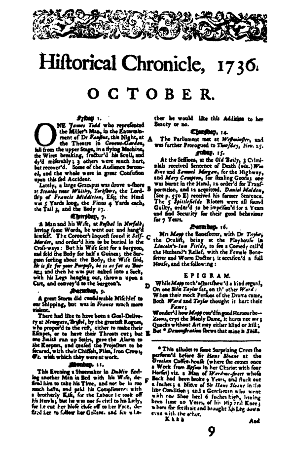
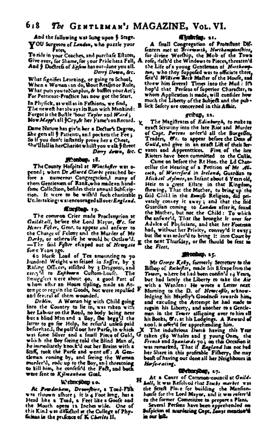

ADIM James Wardley, terziyim. 1685’te, Moor ilçesine bağlı Bolton’da doğdum. Evliyim.
S. Bakın Wardley, vakit geç oldu, sizi fazla tutacak değilim, sizinle inançlarınızı tartışmayacağım, yalnızca Rebecca Lee’yi ilgilendiren bazı gerçekleri doğrulamak istiyorum. Sizin sürünüzden, din topluluğunuzdan, artık adına ne diyorsanız, ondan saydığınız biri o, değil mi?
Y. Ben ruhları, bir cimrinin paralarını saydığı gibi sayan bir rahip ya da papaz değilim. Bizler cemaat halinde yaşıyoruz. O benim kardeşim ve benim inandıklarıma inanıyor.
S. Fransız peygamberlerinin doktrinlerini öğretiyorsunuz, öyle değil mi?
Y. Gerçeği öğretiyorum ben: Bu dünyanın günahlarından dolayı sonuna yaklaştığını, Hazreti İsa’nın dünyayı bir kez daha kurtarmak için döneceğini öğretiyorum. Her kim O’na inanırsa ve O’nun ışığıyla yaşarsa, kurtulacaktır. Geriye kalan herkes ise sonsuz bir lanete uğrayacaktır.
S. Lanetlenecek olanlar sizin ardınızdan gitmeyen herkes mi?
Y. Havariler’in ilk kilisesinin son bulmasından beri, Deccal’in arkasından gidenler ve Yüce Efendimiz’in, vahiylerle duyurulmuş olan sözünü işitmeyenler.
S. O zamandan beri varolan bütün dinlerin Deccal’in mi eseri olduğunu söylüyorsunuz?
Y. Yüz yıl önce, Kardeşlerin gelişine kadar. Onlar dışında herkesin içine, Şeytan’ın büyük Ben’i girmiştir. “Defol git, büyük Ben, yok ol buradan.” Dualarımızda böyle deriz biz.
S. Kalvinistler gibi, insan kaderinin önceden belirlendiğine inanmıyor musunuz siz?
Y. Hayır, zaten onların tanrısına da inanmıyoruz.
S. Ne eksik var onların doktrininde?
Y. Bu öğretide insanın, eğer yapması gerektiği gibi yapmayı seçerse, yaşayan İsa’nın içinde değişemeyeceği, ten arzularıyla savaşamayacağı ve günahlara son veremeyeceği söyleniyor.
S. Bu doktrini İncil’den mi çıkarıyorsunuz siz?
Y. İnsan ikinci kez doğmadıkça Tanrı’nın krallığını göremeyecektir. Kutsal Kitap iyi bir tanıktır ve bilgeliklerle doludur, ama her şey de değildir. Böyle deriz biz.
S. Nasıl her şey değildir! Kutsal ve yanılmaz gerçek değil midir Kitap?
Y. Bizler Kutsal Kitap’ın iyi insanlar ve azizler tarafından yazıldığını ve bu insanların yalan söylemeden, içlerindeki ışığa uyarak yazdıklarını söylüyoruz. O zaman insanların anladıkları şuydu: Bazı şeyler için, bu oldukça kesin bir gerçek değildi. Yanılgıya sürükleyen, yalnızca sözcüklerdir. Yüce Efendimiz yazılı şeylere hiçbir şey borçlu değildir. Kutsal Kitap da onun son tanıklığı değildir, çünkü bu, onun şimdi ölü olduğunu söylemektir ki, bu da günahkârların vicdan azabı çekmeden günah işleyebilmeleri için Deccal’in yaymış olduğu iğrenç bir sapkınlıktır. O ölmedi, yaşıyor, her şeyi görüyor ve yakında aramızda olacak.
S. Bana söylenenlere bakılırsa Kutsal Teslis’e inanmıyormuşsunuz.
Y. Kutsal Teslis denilen bu şey tamamen erkek ürünü olduğu, içinde kadına hiç yer olmadığı için, buna inanmıyoruz biz.
S. İsa’nın dünyaya yeniden bir kadın biçiminde gelebileceğini, dinsel gerçeklere hakaret eder bir tarzda bunu mu söylemek istiyorsunuz?
Y. Bunda ne hakaret var? Ak ve en büyük günah, her ikisi de eş ölçüde suçlu olan, Adem ile Havva’nın zina yapması oldu. Onlardan çıkan erkek ve kadının her ikisi de kurtarıcı olabilir. Onların her birisi de İsa’nın benzerliğini taşıyabilir ve taşıyacaktır da.
S. Cennet’ten gizlice gelmiş olabileceğine, şu anda dünyada görülebileceğine inanıyor musunuz siz O’nun?
Y. İsa bir giz değildir. Dünyanın bugünkü hali bunun cevabını veriyor sana. Eğer görülmüş olsaydı, dünya şu anda olduğu gibi olmazdı, yani körlük ve yozlaşmışlık içinde.
S. Peki ya Kutsal Bilgelik Ana?
Y. O kim?
S. Kutsal Ruh’a böyle demiyor musunuz siz?
Y. Hayır.
S. Böyle denildiğini de hiç işitmediniz mi?
Y. Hiç işitmedim.
S. Peki, Sonsuz Haziran adı verilen cenneti, sonsuz yaşamı?
Y. Seni fena halde faka bastırmışlar, Üstat. Cennetin öyle özel bir mevsimi falan yoktur, Haziran olmaz da başka herhangi bir ay da olur.
S. Sizler her türlü ten hazzından uzak mı duruyorsunuz?
Y. Ten hazları, tensel doğa Deccal’in evidir ve biz oraya hiç girmeyiz. Bizi onun zincirlerinden özgür kılan şey iffettir, başka bir şey değil. Biz böyle deriz ve böyle yaşamak için de elimizden geleni yaparız.
S. Bir soru daha soracağım. Sizin inancınıza göre, gerçek bir müminin vücudu ölümünden sonra da yaşar mı?
Y. Ötekilerde olduğu gibi içinde ışığı taşıyanlarda da, her türlü ten yozlaşmadır. Yalnızca ruh yeniden dirilir.
S. Bu fikir sadece sizden değil, kendilerini Fransız Peygamberler olarak ilan eden bütün şu kişilerden de kaynaklanıyor, öyle değil mi?
Y. Buna kendin karar verebilirsin. Okuduğun kitaplarda Misson ve Elias Marion ile karşılaşmışsındır. Otuz yıl kadar önce Yüce Tanrı’nın yanına giden Thomas Eames ile. Hatta Sir Richard Bulkeley ile. Günümüze kadar bu yörede yaşamış olan ve benim de çok iyi tanıdığım John Lacy’den bilgi rica edebilirsin, o şu anda yetmiş iki yaşında ve gerçeğe benden çok daha uzun zamandır tanıklık ediyor.
S. Pekâlâ. Şimdi şu anki davamıza gelelim. Rebecca’nın sizinle ve sözünü ettiğiniz bu kişilerle aynı inancı paylaştığına inanıyor musunuz?
Y. Evet.
S. Yani kocasının ya da babasının isteğiyle, her ikisinin ya da birinin hoşuna gitmek için bu inanca bağlanmadı, öyle mi? Yalnızca sizinkinde değil bütün dinlerde böyle şeyler çok oluyor çünkü.
Y. Hayır. O kendi vicdanının sesini dinleyerek bizim inancımızı kabul etti. Ona ve onu benden çok daha iyi tanıyan karım Jane’e bu konuda birçok soru sordum.
S. Geçmişini biliyor musunuz onun, Londra’da fahişelik yaptığını?
Y. Nedamet getirdi o.
S. Yine soruyorum. Eskiden sürdüğü hayat hakkında bilginiz var mı?
Y. Ben, erkek din kardeşlerime ve karım da hemcinslerine bundan söz ettik ve onun kurtulacağını umuyoruz.
S. Sadece umuyorsunuz, öyle mi?
Y. Yargı gününden sonra, onu yalnızca İsa kurtaracak.
S. Geçmişindeki hayatından pişmanlık duyması konusunda samimi olduğuna inanıyor musunuz onun?
Y. Evet, kurtarılmaya can atıyor.
S. Yani, inançlarınızı paylaşıyor ve bunları fanatikçe destekliyor, öyle mi?
Y. Bu soruna yanıt vermeyeceğim. Ben barış taraftarıyım.
S. Quaker’lerden de bu barış sorunu yüzünden ayrılmadınız mı? Siz Quaker olarak doğmamış mıydınız?
Y. Ben gerçeğin dostu olarak doğdum ve öyle de öleceğim, ama Yüce Tanrı’ya hamdolsun, bu arada, İsa’nın kelamı için de mücadele edeceğim. Şimdi bazılarının yaptığı gibi, ha düşmanları beni ilgilendirmez diyemem. Eğer bunlardan biri ruhani meselelerde bana meydan okursa, ben de ona okurum.
S. Onlar sizi bu şehirdeki toplantı yerlerinden kovmadılar mı?
Y. Eğer sesimi çıkarmamış olsaydım, hâlâ aralarında olabilirdim. Bu tıpkı, bir insan yürüyebilir ve yürüyecektir ama zincirler takarak, demek gibi bir şey. Efendim Hazreti İsa’nın inayetiyle, bunu kabul etmeyeceğim ben.
S. İki yıl önce onların toplantılarından dışlanmadınız mı?
Y. Ben İsa’nın yeniden gelişinden söz ediyordum, onlarsa beni dinlemek istemiyorlardı.
S. Gerçek Hıristiyanlar olarak adlandırdığınız sizin gibi kişilerin sivil otoriteyi tanımayacağını söylemediniz mi? Ve bu otoritenin, dünyanın mahkûm olduğu günahların en çarpıcı bir örneği olduğunu?
Y. Sivil otorite bize vicdanımıza karşı bir şey söyletmeye ya da yaptırtmaya çalıştığında, tanınamayacağını söyledim. Her zaman itaat etmemek gerektiğini söylemedim. Eğer böyle düşünmüş olsam, şimdi önünüzde olur muydum?
S. Bütün zenginliklerin ve mülklerin ortaklaşa paylaşılmasını istediğiniz ve bu doğrultuda konuştuğunuz söylendi bana.
Y. Tanrı günahkârlardan intikamını alınca, O’na inananlar arasında böyle olacağı kehanetinde bulundum ben. Bunun şimdi yapılması gerektiğini söylemedim.
S. Şayet yapılsa, dünyamızın daha iyi olacağını iddia ediyorsunuz, öyle mi?
Y. Yapıldığında daha iyi bir dünya olacağını iddia ediyorum ve bir gün Tanrı’nın iradesiyle, olacak bu.
S. Her şey altüst olduğunda, daha iyi bir dünya mı olacak burası?
Y. İsa her şeyi altüst etti. Biz kendi doğrulamamızı onda buluyoruz.
S. İsyan ve başkaldırı tohumları ekmek için, öyle değil mi?
Y. Bu konuda elinde hiç kanıt yok. Buna kanıt yok.
S. Fransız Peygamberlerden burada kaç kişisiniz?
Y. Kırk ya da elli kadar, doğduğum yer olan Bolton’da da birkaç kişi var. Ve ayrıca Londra’da da.
S. O zaman pek güçlü değilsiniz?
Y. Damlaya damlaya göl olur. Başlangıçta, İsa’nın etrafında daha az kişi vardı.
S. Bir başkaldırı hareketine girişmemenizin sebebi de bu değil mi? Bunu başaramayacak kadar zayıf olmanız, ama daha kuvvetli olsaydınız, teşebbüs ederdiniz buna, öyle değil mi?
Y. Kurnazca varsayımlarınla beni tuzağa düşüremezsin, üstat. Bütün sivil meselelerde sivil hukuka itaat ediyoruz biz, vicdanımıza aykırı olmadıkça hiçbir kimseyi incitmiyoruz. Günaha karşı ayaklanmak istiyoruz, elbette, günaha karşı kılıç elde çarpışmak istiyoruz, ruhları kurtarmak için istiyoruz bunu. Buna karşı hiçbir yasa yok. Ve güçlendiğimizde de, yasalara karşı bir ayaklanma olmayacak çünkü herkes bizim İsa’da yaşadığımızı görecek ve bizim saflarımıza katılacak. O zaman insanlar arasında barış ve gerçek saygı olacak.
S. Kanunlar resmi kiliseye ve onun otoritesine itaat ister, öyle değil mi?
Y. Evet. Roma Kilisesi de eskiden resmi kiliseydi.
S. Bu krallıktaki resmi kilise olan Protestan Kilisesi de Roma Kilisesi kadar kötü ve kokuşmuş mu yani? Bunu mu demek istiyorsun?
Y. Bütün kiliselerin insanlardan oluştuğunu söylüyorum. İnsanlar etten kemikten yaratılmışlardır ve etten kemikten yaratılmış bir şey doğuştan yozdur. Resmi kilisenin bütün kişilerinin yozlaşmış olduklarını söylemiyorum. A Serious Call to a Devout and Holy Life’ı okudun mu sen? Onu yazan ve senin kilisenden olan William Law’u yargılayacak değilim ama o kötü bir adam. Bu utancını İsa’nın ışığına köstebek gibi kör olan başkalarına da taşıyor işin kötüsü.
S. Bu da hiç hak etmedikleri bir yeri işgal ediyorlar anlamına geliyor. Onlara karşı ayaklanmak için yapılmış açık bir çağrı bu. Geçen yüzyılda da atalarımız, hatalarına ve hoşgörüsüzlüğe böyle sürüklendiler işte. Tarihin de kanıtladığı gibi, lanetlenmiş olduğunuzu kendi ağzınızla söylemiş oluyorsunuz böylece.
Y. Eğer kötü ya da kör bir adamın, sırf olduğu gibi olmasından ötürü, bulunduğu yerde kalması gerektiğini düşünüyorsan, sen de aynı hataya düşüyorsun demektir. Bu tür akıl yürütmelerle, Şeytan’ın da iyi ve yerine uygun olduğunu kanıtlayabilirsin. Etini kötü bir kasaptan almak istemezdin, değil mi? Benim mesleğimden olup da dikiş dikmesini bilmeyen birine gitmek de istemezdin elbette. Ama İsa’nın Kelam’ının çarpıtılmış olmasından, O’nun sözüne ihanet edilmiş olmasından hiç kaygı duymayacaksın. Çünkü bir papazın vasıflarını taşıyan ya da adının arkasına bir sürü unvan ekleyen kişi yiyip içebilir, fahişelerin arkasından koşabilir, istediğini yapabilir, bunları yapabilmek elindedir onun.
S. İnsanlar arasında kurulacak barış ve saygıdan bunu mu anlıyorsunuz siz? Mr. Fotheringay haberdar olacaktır bundan.
Y. Peki bu da senin benim inançlarımı tartışmama tarzın demek ki? Umarım Mr. Fotheringay bundan büyük yarar sağlayacaktır.
S. Yeter. Şimdi şunu bilmek istiyorum: Toplantılarınızda Lee’nin karısı kehanetlerde bulundu mu?
Y. Hayır.
S. Herkesin arasında ya da özel olarak, onda bu yeni din duygusunu uyandıran şeyden herhangi bir biçimde söz etti mi?
Y. Yalnızca geçmiş hayatındaki korkunç günahları ve bundan duyduğu pişmanlığı itiraf etti.
S. Kendisinde böylesi bir değişikliğe yol açan özel bazı durumlardan söz etmedi mi?
Y. Hayır.
S. Hiçbir özel bir günden ya da bir yerden?
Y. Hayır.
S. Peki, başka kişilerin de içinde bulunduğu durumlar olup olmadığından?
Y. Hayır.
S. Emin misiniz?
Y. Olması gerektiği gibi, yumuşak başlı biri o ve şimdi İsa’da yaşıyor, en azından O’nda yaşamak istiyor.
S. Nasıl yaşamak istiyor yani? Hancından hâlâ emin değil mi?
Y. Ona henüz kehanette bulunma gücü verilmedi. Bu, İsa’nın inayetiyle olur ve olması için de bizler dua ediyoruz.
S. Aranızdaki en kabiliyetliler gibi ahkâm kesebilsin diye mi?
Y. Kendisine ışığın görkemli dilinin bağışlandığını görebilir ve karımın ve ötekilerin yaptığı gibi, bunu ilan edebilir.
S. Demek bundan yana hâlâ eksikliği var, öyle mi?
Y. Kehanette bulunmuş değil.
S. Sakın sizi aldatıyor olmasın?
Y. Niye aldatsın ki?
S. Aslında içten içe hâlâ öyleyken, bir zamanlar olduğu gibi olmadığını iddia etmek için.
Y. O, bir gün İsa’da yaşayabilmek için, İsa için yaşıyor. O ve kocası yoksul insanlar, bir dilim kuru ekmeğe muhtaç olacak kadar yoksullar, kocası geçimlerine yetecek kadar para kazanmıyor. Senin Babil’inde yaptığı gibi, zenginlik ve ten zevkleri içinde yaşayabilecekken, niye yalandan böyle yaşamayı istesin ki?
S. İhtiyaçlarını sağlamıyor musunuz onların?
Y. Elimden geldiğinde yapıyorum bunu, İsa’ya inanan bütün din kardeşlerimiz de yapıyorlar.
S. Bu özel bir yardım mı yoksa ihtiyacı olan herkese mi veriliyor?
Y. Herkese veriliyor. Çünkü George Fox ile ilk din kardeşlerimiz şöyle demişlerdir: Gerçeğin ışığı ruhun kendisine nüfuz etmeden önce, ruhun saklandığı kutsal dolap olan beden, gerektiği gibi beslenmeli ve giydirilmelidir. Sana niçin böyle dediklerini de söyleyeceğim: Çünkü onlar çevrelerinde, insanlığın büyük bir bölümünün, sefalet içinde, ilkel insanlardan daha kötü bir durumda yaşadıklarını görüyorlardı ve aynı zamanda, kendilerini kurtarabilecek olanları ve kurtarması gerekenleri de görüyorlardı çünkü onlar giyinip kuşanmak ve beslenmek için gerekenden bile daha fazlasına sahiptiler ancak bencilce kendini beğenmişliklerinden ve açgözlülüklerinden sahip olduklarını paylaşmaya yanaşmıyorlardı. Ve bu iyilikseverlik eksikliği Yüce Efendimiz Hazreti İsa’nın burnuna pis bir leş kokusu gibi çarptı ve O, bu kadar körcesine davranan bütün bu insanları lanetledi. Şimdi, istersen, bize isyancı de, evet, bu bakımdan, birer isyancıyız bizler, vermenin iyi ve adil bir şey olduğunu ve Hazreti İsa’nın bize öğrettiği gerçek kardeşliğin en iyi örneğinin burada yattığını biliyoruz. İstersen bize isyancı de, böyle dersen, O’na da isyancı demiş olursun.
S. İsa, merhamet ettiği için veriyordu, sizin durumunuzda ise böyle bir şey yok. Sizler, toplum içinde hak ettiği yerde bulunduğu halde kendilerini sizin aldatmacalarınıza kaptıranları hâkimiyetiniz altına alabilmek için veriyorsunuz.
Y. Hak edilen durumda olmak açlıktan ölmek ve paçavralar içinde dolaşmak mı? Hemşiremizin yaşadığı sokakta şöyle bir dolaşsan iyi ederdin. Gözlerin var senin değil mi?
S. Senin hemşirenin elbisenin eteği ardında iyice gizlendiğini ve bu yoksul şehirde hiç de açlık çekmediğini görecek kadar gözüm var.
Y. O kadar iyi gizleniyordu ki, onu buldun.
S. Onu aylardır arıyordum.
Y. Bak, şu dün bana, yapmış olduğum iki elbise için ödenen bir gine, sen de buna bir gine ekle de bu iki gine’yi, senin hak ettiği durumda olduklarını düşündüğün oysa açlık çeken ve dilencilerden daha kötü koşullarda yaşayan, şu Toad Lane sakinlerine vereyim. Ne o, vermek istemiyor musun? İyilikseverliğe inanmıyor musun sen, Üstat?
S. En yakın içki satıcısının cebini dolduracak böyle bir iyilikseverliğe inanmıyorum ben.
Y. Sen, yarına da inanmıyorsun. Ben sende büyük bir ihtiyatlılık görüyorum. Peki Hazreti İsa, senin için de vermedi mi, hem de bir gine’nin değerinden çok daha fazlasını vermedi mi? Peki ya o da senin kadar ihtiyatlı olsaydı ve “Bu adamı kurtarmasam iyi ederim çünkü o zayıf, kanım en yakın içki satıcısının ceplerini doldurmaktan başka işe yaramayacak” deseydi?
S. Küstahlaşıyorsunuz, buna müsaade edemem.
Y. Ben de senin gine’ni alacak değilim, böylece ödeşmiş olduk.
S. Bu kadının büyük bir suç işlemiş olması ihtimali var.
Y. Sen de benim kadar iyi biliyorsun ki, Havva’dan doğmuş olmak dışında, hiçbir büyük suç işlemedi o.
S. Büyük bir yalancı olabileceğinden kuşkulanıyorum onun.
Y. Bırak bunları, ben senin ününü duydum. Senin haksever bir adam olduğunu ama efendine hizmette çok sıkı davrandığını söylüyorlar. Ama şimdi ününe yakışır davranmıyorsun, beni tanımadığını ileri sürüyorsun, peki, öyle olsun alışığım ben buna. Sen beni ve benim inancımdan olan herkesi, zenginleri yoksullardan ayırmak için katı birer metale dönüşmüş, o tuğla kalınlığındaki koca kanun kitaplarına çarpıp parçalamak isterdin. Ama hayır, bizi parçalayamayacaksın, ne kadar uğraşsan da yapamayacaksın bunu, sana karşı direneceğiz. Coplarınla vurdukça, bu coplar elinde bizi iyi tahıl tanelerine dönüştürecek birer harman döveci olacak. Şimdi sana babamın zamanından bir hikâye anlatacağım, hikâye aynı zamanda, benim de doğum tarihim olan, 1685, Monmouth yılında geçiyor. İsa’ya şükürler olsun, babam, ışığı ilk gören George Fox ve karısıyla Swarthmoor’da tanıştığından beri, bir gerçek âşığı oldu ve temelsiz bir gerekçeyle Bolton’da zindana atıldı. Hapisteyken Mr. Crompton adında bir sorgu yargıcı kendisini sorguya çekmiş ve babamı yolundan döndürmeye, Kardeşler topluluğundan ayırmaya çabalamış. Ancak babam kendisini bu sözlerin etkisine kaptırmamış ve inancından o kadar iyi söz etmiş ki, inancı sarsılan sorgu yargıcı olmuş. Çünkü sonunda babamı bir yana çekmiş ve şunları söylemiş. “Bu dünyada iki çeşit adalet vardır, sen Tanrı’nın adaleti önünde masumsun, insanların adaleti önünde ise suçlusun.” Ve üç yıl sonra bu sorgu yargıcı büyük bir skandala neden olmuş çünkü zincirlerini kırıp bizim saflarımıza katılmaya gelmiş, gerçi bu ona çok pahalıya da mal olmuş çünkü dünyada sahip olduğu birçok şeyi de yitirmiş. Babamla yeniden karşılaştığında ise, onu şu sözlerle selamlamış: “Bir zamanlarki sefil halimi yargılamak şimdi sana düşüyor, kardeşim, çünkü şimdi, ışıktan yoksun adaletin atkısız bir dokuma olduğunu ve bundan hiçbir zaman iyi bir kumaş çıkmayacağını biliyorum.”
S. Yargıçlar kurulu onu başından atmakla iyi etmiş. Kanunları günahtan ayırt edemeyen bir millet kayıp demektir. Suç, kanıtlanabilen ya da kanıtlanamayan bir gerçektir. Günahı yargılamak ise, yalnızca Tanrı’ya düşer.
Y. Sen gerçeğe karşı körsün.
S. Sen de bütün öteki insanların düşünüp karar verdikleri şeye karşı körsün. Günah bir kez suça dönüştü mü, Papacıların Engizisyonu gibi, bundan büyük bir tiranlık çıkar.
Y. Engizisyon sözcüğü senin ağzına çok iyi yakışıyor, hukukçu üstat. İnsanlar düşünür, insanlar düşünür... evet, insanların çoğu düşünür. Ve çoğu kez de, bu dünyevi hayatlarına, burada sürdükleri günahkâr hayatlarına en çok neyin uygun olduğunu düşünürler. Ama hepsinin de yargılanacakları yukarının mahkemesini hiç düşünmezler. İşte orada sen, Deccal’in hizmetinde olan yasalarının yanında, günahın bu kadar az değeri olup olmadığını öğreneceksin.
S. Yeter, kes. Çok inatçı bir adamsın sen.
Y. Ve Hıristiyan kaldığım sürece, öyle de olmaya devam edeceğim, Yüce Efendi’mize şükürler olsun.
S. Yarın senden de, yoldaşlarından da hiç ayak direme istemiyorum, anlaşıldı mı? Öyle, pencerenin altında falan da toplaşmayacaksınız. Seni ikaz ediyorum, bu isyankâr mizacını kontrol altına alsan iyi edersin. Yoksa dosdoğru, ne yapmak istediğimi ve soruşturmamın amacını bilen Mr. Fotheringay’i çağırtırım. Hadi şimdi git.


Ertesi sabah erken bir vakitte Rebecca, daha önce alındığı aynı odaya, Ayscough’ın yanına götürülür. İç inde, on yedinci yüzyıl üslubu, masif ve şişkin ayaklı bir masa bulunan, oldukça geniş bir odadır burası. Sadece çalışma odasına dönüştürülmüş basit bir han odası değil, hanın gereksinimlerine göre, arada sırada yemek odası, kulüp ve özel toplantı salonu olarak da kullanılan bir yerdir. Rebecca muhatabından iki metre kadar uzaklıkta, cilalanmış meşe ağacından döşemenin üzerinde durmaktadır. Çok gariptir ki Ayscough, sanki bir hanımefendinin karşısındaymışçasına, onu selamlamak için ayağa kalkar. Ancak bir hanımefendi için yapacağı gibi eğilmez. Yalnızca yüzüne doğru bakarak başını hafifçe sallar ve oturması için işaret eder. Sandalyenin önündeki masanın üzerine bir su sürahisi konulmuştur, belli ki ona ihtiyaç duyulacağı öngörülmüştür.
“İyi dinlendiniz mi, bayan? Karnınızı da doyurdunuz mu?”
“Evet.”
“Kaldığınız yerden hiç şikâyetiniz yok, değil mi?”
“Hayır.
“Oturabilirsiniz.”
Rebecca oturur ancak sorgu yargıcı ayakta kalır. Masanın öteki ucunda yerini almış olan John Tudor’a doğru döner ve ilk söylenecek olanların kaydedilmemesi gerektiğini çabuk bir hareketle işaret eder.
“Dün akşamki davranışınızdan ötürü sizi övmem gerek. Wardley’e ve babanıza, taşıdığı kötü niyetlerinde cesaret vermekten kaçındınız. İyi bir örnek oldunuz.”
“Onların kötü niyeti yoktu.”
“Bu noktada, aynı fikirde değilim ben. Her neyse, Bayan Rebecca. Saygıdeğer bir baba, sıradan bir babadan başka her yönden farklı olabilir; ancak bir noktada, bir evladın kaybı söz konusu olduğunda, her ikisi de birbirine benzer ve ilgimize eş ölçüde layıktırlar. Öyle değil mi?’’
“Bütün bildiğimi anlattım size.”
Ayscough genç kadının sabit ve kendisindeki tavır değişikliğinden ötürü şimdi biraz şaşkınlığa kapılmış olan gözlerine uzun uzun bakar. Bu son yanıttan sonra, kadının bir şey eklemesini bekliyormuşçasına, her zaman yaptığı gibi, perukalı kafasını yana doğru eğer. Ancak Rebecca hiçbir şey söylemez. Derken sorgu yargıcı pencereye doğru yürür, düşünceli düşünceli dışarıya bakar, sonra yeniden genç kadına döner.
“Bayan Rebecca, biz kanun adamları idareli olmak zorundayız. Tarlalarımızı öteki insanlardan daha özenle devşirmeli, en küçük gerçek tanesini bile değerli sayıp muhafaza etmeliyiz, özellikle de kıtlık zamanlarında. Size soracak daha bir sürü sorum var ki dindarlığınızdan ötürü bunları hakaret olarak görebilirsiniz.
“Sorun. Günah işlediğimi unutmuyorum.”
Ayscough, yanında durduğu pencereden giren ışığın aydınlattığı bu bekleyiş halindeki, boyun eğmez çehreyi uzun uzun seyreder.
“Bayan, bana dün anlatmış olduğunuz ve zihninizde hâlâ taze olan masalı yeniden tekrarlatacak değilim. Başlamadan önce, ilkin şunu söylemek istiyorum. Eğer dün gecenizi düşünüp taşınarak geçirdikten sonra tanıklığınızda bir değişiklik yapmayı arzu ediyorsanız, bundan dolayı hiçbir şekilde suçlanmayacaksınız. Eğer önemli bir şeyi atlamışsanız, eğer korktuğunuzdan ötürü, bulunduğunuz durumdan ötürü ya da başka herhangi bir sebeple tüm gerçeği söylememişseniz, bundan zarar görmeyeceksiniz. Bu konuda size söz veriyorum.
“Bütün gerçeği söyledim ben.”
“Her şeyin anlattığınız gibi mi olup bittiğine inanıyorsunuz?”
“Evet.”
“Beyefendi cennete mi gitti yani?”
“Evet.”
“Bayan Rebecca, böyle olmuş olmasını isterdim, hatta böyle olmasını diliyorum. Ama size göre bir avantajım var benim. Siz Beyefendi’yi sadece bir aydan biraz fazla zaman önce tanıdınız ve kendinizin de itiraf ettiğiniz gibi, bu arada sizden birçok şeyini gizledi. Ben ise onu yıllardır tanıyorum, bayan. Ne yazık ki, benim ve daha birçok insanın da tanıdığı kişi, sizin bize tarif ettiğiniz kişi değil.”
Rebecca hiç yanıt vermez. Sanki hiçbir şey söylenmemiş gibidir. Ayscough bekler, sonra sözüne devam eder.
“Bir sır olarak size ondan biraz bahsetmek istiyorum, bayan. Beyefendi’nin size gösterdiği ilgi kendi ailesini de, mensup olduğu arkadaş çevresini de çok, çok şaşırtmıştır çünkü yakınları Beyefendi’yi kadınların en az hoşlanacağı bir tip olarak görmüşlerdir hep. O malum işlerde ölü bir balık kadar duyarsız olduğu söylenegelmiştir. Ve bütün bu yıllar boyunca, bayan, mensup olduğu sosyal tabakaya rağmen, resmi dine en ufak bir saygı göstermemiştir. Kırlangıçlar kış balçığından ne kadar hoşlanırlarsa o da bir kilisede mutluluk içinde diz çökmekten o kadar hoşlanır olmuştur. Sizin Claiborne’un evinde sürdüğünüz eski hayata son vermeye ve bunun için de önünüze çıkacak her türlü yardımı kabullenmeye hazır olduğunuza inanabilirim. Ancak bu yardımı size, bir ay öncesine kadar hiç görmediği sıradan bir fahişeye temin edecek kişinin Beyefendi olduğuna hiç inanamam, bayan. Buna dünyada inanamam.”
Mr. Ayscough yine genç kadının yanıt vermesini bekler ama Rebecca yine hiç yanıt vermez. Sorgu yargıcı gözlerini Rebecca’nın gözlerinden ayırmadan masanın önündeki koltuğuna döner. Rebecca’nın gözlerinde belki de bir zaafın, bir savunma tavrı ifadesinin belireceğini ummuştur ama genç kadın aklın her türlü sesine sağırmışçasına, gözleri yumuşak başlılık ve kararlılık karışımından oluşan o garip ifadeyi korurlar. Sorgu yargıcı sözünü sürdürür.
“Sadece, yine inanamadığım birkaç şeyden söz edeceğim, bayan, Mesela sizin, son derece dine aykırı şartlar altında, Yüce Efendimiz ve Onun Kutsal Babası ile karşılaşmak üzere, pagan putperestliğinin bu başlıca yerine ve yine din bakımından son derece skandal yaratacak şartlar altında, her şeyin daha da anlaşılmaz olduğu, Devonshire’daki bir mağaranın dibine götürülmeniz. Tanrısallaşan şu yoksul babalar ve dülgerler; Kutsal Ruh diye tanınan şu kadın figürü şey, Wardley bana onun peygamberleriniz arasında bile bilinmediğini, Sonsuz Haziran diye bir şeyden de haberleri olmadığını söyledi. Bayan Rebecca, siz hiç de budala bir insan değilsiniz, dünya hallerini hiç görmemiş bir kadın da değilsiniz. Bir başkasından sizin anlattığınız gibi bir masal duymuş olsaydınız, anlatanın aklından mı yoksa kendi aklınızdan mı şüphe ederdiniz? İçinizden bağırmak geçmez miydi? Bu saçma sapan ve dine saldıran masala inanamam ve inanmıyorum, bu beni aldatmak, yanıltmak, daha yalın gerçeği görmemi engellemek için uydurulmuş bir masal olmalı, demez miydiniz?”
Ne var ki Rebecca gözlerini hâlâ sorgu yargıcından ayırmamak dışında yanıt vermez; oysa şimdi, onun da bir yanıt vermesi gerektiği apaçık ortadadır. Gerçekte olan biten, bu sorgulamada birçok kez olup bitmiş olan şeydir. Yanıt vermekte son derece yavaş davranmaktadır Rebecca. Tedirgin ve sıkıntılı bir tavırla söyleyeceği sözcükleri arayan ya da arar gözüken bir kadının duraksaması değildir bu, daha çok sanki, bir yanıt vermeden önce, Ayscough’ın kullandığı sözcükleri bir yabancı dilden bir başka dile çeviriyormuş gibi davranan birinin duraksamasıdır. Onda Wardley’in saldırgan tezcanlılığı ve hazırcevaplığından eser yoktur; zaman zaman sanki kendisi yanıt vermemekte, esrarengiz bir akıl hocasının gereken yanıtları kulağına fısıldamasını beklemektedir.
“İsa’nın ilk gelişinde insanların çoğunun kuşku duyduklarını ya da ona inanmadıklarını söylemek istiyorum. Ben yalın gerçeği söyledim. Daha fazlasını bilmiyorum.”
“Çok mütevazısınız, bayan. Madam Claiborne sizin, işinizin icap ettirdiği kabiliyet kadar aktrislik kabiliyetiniz de olduğunu söylemişti. Jones’a anlattıklarınızda hiç gerçek payı olmadığını kendiniz itiraf etmemiş miydiniz? O zaman yalan söylemeye zorlandığınızı iddia edebilirsiniz ama hiç yalan söylemediğinizi edemezsiniz.”
“Önemli konularda hiç yalan söylemedim.”
“Her şeye kadir Yüce Tanrı ve Onun Oğlu ile karşılaşmak üzere cennete götürülmek önemsiz bir konu mu?
“O kadar önemli ki bundan sözcüklerle bahsetmek neredeyse olanaksız bir şey. O zaman bundan sözcüklerle nasıl bahsedeceğimi bilmiyordum, sana nasıl söyleyebileceğimi de hâlâ bilmiyorum. Ancak her şey öyle olup bitti ve ben Hazreti İsa ile Babası’nı görmeye mazhar oldum, gördüklerim ruhum için bir merhem etkisini gösterdi çünkü onların varlıkları beni büyük bir sevinçle, hiçbir yeryüzü hazzının veremeyeceği kadar büyük bir hazla doldurdu.”
“Her şeye kadir küçük bir toprak sahibi, Kurtarıcı olan bir köylü, kuru otları kaldıran biri, bunlar bağdaşan şeyler mi?’’
“Kutsal Tanrı Baba bir tahtın üzerinde ihtişamla oturmazsa daha az mı Tanrı olur? Hazreti İsa bir çarmıhın üzerinde sonsuz ıstırap çekmezse daha az mı İsa olur? Peki ya melekler, kanatlarını kaybettikleri ve ellerinde harp ya da trompet yerine birer tırpan taşımaya başladıkları andan itibaren daha az mı melek olurlar? Sana söylemiştim, beni Şeytan’dan geldiği ileri sürülen bütün dindarlık imgelerinin reddedildiği bir ortamda yetiştirdiler. Gördüklerim, bedenimin gözleriyle gördüklerim, biricik gerçeğin gölgeleriydi yalnızca, ama ruhumun gözleriyle, ilk ve son sevgi nesnem, ışığın kendisini gördüm ben.”
“Gözlerinizle istediğinizi görebilirsiniz çünkü bütün gördüğünüz yalnızca bir yanılsama, öyle değil mi?’’
“Gözlerimle gördüklerim maddi şeylerdi, bunlarda yalnızca ışığın taşıdığı kesin gerçek yoktu. Kendi gözümle gördüğüm maddi şeyler, senin ya da bir başka erkeğin ya da kadının gördüklerinden ne daha fazla ne de daha az gerçekti.”
Bu diyalogdan sonra, gizlemeye çalışmasına karşın, güç bir durumda kalır Ayscough. Günümüzün bir insanı, Rebecca’nın yalan söylediğinden ya da en azından uydurduğundan bir an olsun kuşku duymazdı. Okuması yazması olmayan Akdeniz köylülerine arada sırada Bakire Meryem’in görünmesi dışında, artık tanrılar insanlara kendilerini göstermiyorlar. Ayscough’ın zamanında bile, böylesi görünmeler Katoliklerin bir aldatmacası olarak yorumlanıyor ve bu tür sahtekârlıkları kınayan dini bütün Protestanları hiç de şaşırtmıyordu. Ne var ki Ayscough’ın İngiltere’sinde, onun sınıfından olan kişiler bile, bizim kesin doğrularımıza sahip olmaktan çok uzaktılar. Sözgelimi, Ayscough, hayaletlere inanıyordu, kendisi hiç görmemekle birlikte, birçok hayalet hikâyesi okumuş ve işitmiş ve hiç kuşkusuz bunları yalnızca kocakarılardan ya da bunamış kişilerden de duymamıştı. O çağda, hayaletler ve ruhlar, kendini fantezilere kaptırmış aylak bir hayalgücünün ürünü değillerdi; bunlar büyük ölçüde hâlâ aydınlatılmamış, yalnız ve tüm nüfusu günümüzün modern Londra’sının bir bölümünün nüfusundan bile az bir İngiltere’nin içinde bulunduğu gerçek gecenin bağrından kaynaklanıyordu.
Ayscough hiç kuşku yok ki bu aynı yıl, Büyücülüğün Yasaklanması Kararı’nın kaldırılmasını (İskoçya dışında) desteklemiştir. Ne var ki bunun nedeni büyük ölçüde, işittiği, hatta kariyerinin başlangıcında bizzat uğraşmak zorunda kaldığı büyücülük vakalarının, kusurlu yasalardan ve çoğu kez de tartışma götürür tanıklıklara dayanmış olmalarından kaynaklandığını şimdi kabul ediyor olmasındandır. Yine, hiç büyücülük yapılmamış olduğunu ileri sürmemekte, yalnız büyücülüğün kötü yanlarının ortadan kalktığını söylemektedir. Devonshire’ın ücra bir köşesinde, kötücül bir büyücüler topluluğunun hâlâ eski uygulamalarını izliyor olmaları, pekâlâ ihtimal dahilindedir. Rebecca’nın, anlattığı şu kutsal görüntüler hikâyesinde kesinkes yalan söylediğini hissedebilmekte (gene de bunlardan, efendisinin oğlu hakkında birtakım bilgiler çıkarmaktadır, ama şunu da belirtelim ki, efendisinin oğluna, mensup olduğu sosyal sınıfa duyduğu saygı yüzünden yumuşatılmış da olsa, eski bir tiksinti de duymaktadır), evet Rebecca’nın gerçeği kesinkes gizlediğini hissetmekte, ama yine de içinde, yadsıyamadığı, görmezden gelemediği olası bir gerçek parçası da kalmaktadır. Bunu hiçbir zaman kabul edemeyecek ama bu gerçekten duyduğu kuşku da içini hep bir kurt gibi kemirecektir.
“İfadenizi değiştirmek istemiyor musunuz? Tekrar ediyorum, bunun zararını göreceksiniz.”
“Gerçeğin bana zararı dokunmaz. İfademi değiştirmeyeceğim.”
“Pekâlâ, bayan. Bir mahkeme salonunda asla sahip olamayacağınız büyük bir lütfu sundum ben size. Peki, istediğiniz gibi olsun. Ama eğer iddia ettiğiniz şeylerin gerçek olmadığı ortaya çıkarsa, bunun sorumluluğunu da taşıyacaksınız. Şimdi yeniden, şerefiniz üzerine yemin edeceksiniz.” Yerine oturur ve masanın öteki ucuna yerleşmiş olan John Tudor’a bir bakış atar. “Söyleyeceği her şeyi yazın.”
* * *
S. Kullandığınız kelimelerin hepsi düzmece olsa da, biz yine şu görme meselesine dönelim. Beyefendi çalıştığınız randevuevine gelmeden önce, onu hiç görmediğinizden emin misiniz?
Y. Eminim, hiç görmemiştim.
S. Ondan söz edildiğini de işitmemiş miydiniz?
Y. Hayır.
S. Yaptığınız iş çoğunlukla önceden ayarlanıyordu, değil mi?
Y. Evet.
S. Beyefendi ile de öyle mi oldu?
Y. Madam Claiborne’un defterinde, benim adımın altına, “Lord’un bir arkadaşı” diye yazılmıştı.
S. Ne kadar zaman önce yazılmıştı?
Y. Beyefendi’nin geldiği günün sabahına kadar bana bundan hiç söz etmemişti Madam Claiborne.
S. Her zaman böyle mi yapardı?
Y. Evet.
S. Peki size bilgi vermek için yazdığı şeyi yüksek sesle okurken ne yazılı olduğunu görmemiş miydiniz?
Y. Dediğim gibi, onun kim olduğunu ancak sonradan öğrenebildim.
S. Kızlar zaman zaman şehre iniyorlar mıydı? Şenliklere, balolara, tiyatroya falan gidiyorlar mıydı?
Y. Arada sırada ama hiçbir zaman tek başlarına değil.
S. Peki nasıl?
Y. Ava çıkarken bile Madam Claiborne ile fedaileri yanımızdan hiç eksik olmazdı.
S. Ava çıkmak mı?
Y. Günahkârları randevuevine çekmek için tavlamak yani. Baştan çıkıp da bir randevu talep edenlere bunu yalnızca randevuevinde elde edebileceklerini söylüyorduk.
S. Peki, siz ya da arkadaşlarınız hiç özel randevu vermiyor muydunuz?
Y. Madam Claiborne kendisini aldattığımızı fark ederse, bize ödetiyordu bunu.
S. Cezalandırıyor muydu sizi?
Y. Fedaileriyle birlikte yemek yemek zorunda kalıyorduk. Buna “ailece yemek yemek” deniyordu. Onların yanında kanunların verdikleri cezalardan bile daha kötü muamele görüyorduk. Madam Claiborne bizi böyle idare ediyordu. Ailece yemek yemektense ölmek daha iyidir derdik hep aramızda.
S. Ama size hiç böyle muamele edilmedi, değil mi?
Y. Böyle muamele görenleri tanıdım.
S. Yine de, zaman zaman, halkın gittiği yerlere gidiyordunuz. Beyefendi sizi ilkin bu yerlerden birinde görmüş olamaz mı?
Y. O beni görmüşse de ben onu görmedim.
S. Dick’i de mi görmediniz?
Y. Hayır.
S. Tanışmanızdan sonra, Beyefendi hiç sizi daha önceden tanıdığını söylemedi mi? Uzun zamandır sizinle tanışmaya çalıştığını ya da bu tür sözler?
Y. Hayır.
S. Ama yine de sizden söz edildiğini işitmiş olabilirdi, öyle değil mi? Şehirde hakkınızda dedikodu çıkmamış mıydı?
Y. Ne yazık ki.
S. Şimdi şunu öğrenmek istiyorum: Herhangi bir kimseye hiç, yaşadığınız hayattan memnun olmadığınızı, bu hayattan kurtulmak istediğinizi açtınız mı?
Y. Hayır.
S. Kader arkadaşlarınızdan birine de mi içinizi dökmediniz hiç?
Y. Onların hiçbirine güvenemiyordum. Başkalarına da keza.
S. Beyefendi’nin sizinle birlikte o olağan tensel hazzı alamadığını düşünürsek, ilk buluşmadan sonra sizi yeniden görmek istemesindeki ısrarı çok şaşırtıcı bir şey değil miydi?
Y. Galiba bir şeyleri umut etmekten haz alıyordu.
S. Sizin bambaşka bir maksatla seçilmiş olduğunuza dair hiçbir imada bulunmadı mı?
Y. Hayır. Hiçbir imada bulunmadı.
S. Size geçmişiniz konusunda sorular sordu, değil mi?
Y. İki ya da üç soru, daha fazla değil.
S. Peki randevuevindeki hayatınız hakkında soru sormadı mı? Bu hayattan usanıp usanmadığınızı falan?
Y. Oradaki hayatım hakkında 9ordu ama bu hayattan usanıp usanmadığımı sormadı. Gerçi çoğu erkek bunu soruyor. Çoğunlukla da kendi günahlarından korktukları için soruyorlar.
S. Nasıl yani?
Y. Erkekler hem günahtan korkup hem de o günahı işlediklerinde daha çok haz alıyorlar sanki. Bazıları, o hayvanca tutkularının en ateşli anlarında, bizleri orospu diye adlandırmaktan ya da çok daha kötü şeyler söylemekten büyük zevk alıyorlardı, bazıları da bizlere sevdikleri kişilerin adlarını, karılarının hatta Tanrı bağışlasın analarının, kız kardeşlerinin, kızlarının adlarını vermekten hoşlanıyordu. Ve tek bir sözcük etmeden, hayvan gibi davrananlar da oluyordu. Tensel hazlara kapılmış bütün bu kişiler lanetlenmişlerdir ancak şu hayvan gibi davrananların lanetlenmişlikleri ötekilerinkinden biraz daha azdır belki.
S. Hangi doktrinmiş bu? Yani son derece kaba ilkel insanlar gibi günah işleyenler, suçluluklarının bilincinde olarak günah işleyenlerden daha az mı suçlu oluyorlar sizce?
Y. Tanrı her zaman her yerdedir, ya da yoktur.
S. Sizi hiç anlamıyorum, bayan.
Y. Tanrı insanları oldukları halleriyle yargılar, olmak istedikleri halleriyle değil ve yaptıkları şeyin bilincinde olanları daha şiddetle yargılar.
S. Tanrı bu konuda size görüşlerini açmayı münasip buldu galiba, öyle mi?
Y. Sana ne kötülük ettik biz, Mr. Ayscough? Hiç kötülük etmek istemiyoruz sana, açık açık konuştuğumuzda bizi kırmakta, bizi küçümsemekte niye bu kadar kararlısın? İnançlarımız Tanrı’dan geliyor bizim, ama inançlarımızda da alçakgönüllüyüz biz. Bu inançların yalnızca bizlere ifşa edildiklerini söylemiyoruz, hayır, Deccal’e tapmadıkları sürece, bu inançların başka herkese de açık olduğunu iddia ediyoruz. Ben şunu söylüyorum: Ten günahını işleyenler lanetlenmişlerdir, daha büyük ya da daha küçük, bunun hiç önemi yok, onlar lanetlenmişlerdir.
S. Şimdi yeniden sorduğum soruya gelelim. Londra’dan ayrılmanızdan önce, amaçlarına uygun olup olmadığınızı, yani elinize bir fırsat geçerse randevuevinden ayrılıp ayrılamayacağınızı ortaya çıkarmak için, Beyefendi’nin özel bir soruşturma yapmış olduğuna inanıyor musunuz?
Y. Tapınağı ziyaretimizden önce, Beyefendi’nin niyetinden hiç haberim yoktu.
S. Bu niyetini hiç açığa vurmamış mıydı yani? Nasıl isterseniz öyle kabul edin ama siz seçilmiş değil miydiniz, bayan?
Y. Ben seçilmedim, kurtarıldım.
S. Aynı şey. Kurtarılmanız için seçilmeniz gerekiyordu.
Y. O zamanlar ne birini, ne de ötekini biliyordum.
S. Pekâlâ. Şimdilik bunu bir yana bırakalım. Şu lanetlenme meselesine bıraktığınız yerden devam etmenizi istiyorum. Eğer kanunlara uygun olarak evlenirlerse, erkek ve kadın zaman zaman ten hazlarını tadamazlar mı? Niçin cevap vermiyorsunuz? Hadi söyleyin, onlara üremeleri buyurulmadı mı?
Y. Onlar Sonsuz Haziran’da yaşamayacaklar.
S. Orada çocuklar gördüğünüzü söylememiş miydiniz?
Y. Onlar ruhtan yaratılma çocuklardır. Bizim gibi etten kemikten değillerdir. Bizim her türlü tensel günahı tiksintiyle karşılamamızı hor görüyorsun sen. Ben de sana diyorum ki, Sonsuz Haziran’da görmüş olduğum bütün kişiler, hayatları boyunca bu iğrenç günaha karşı savaşmış olan ve şimdi de bunun ödülünü elde eden kişilerin ruhlarıdır. Ödülleri ise, inandığınız gerçeğin kutsal kanıtıdır.
S. Fransız Peygamberleri’nin doktrini mi bu?
Y. Ve evlenmemiş olan İsa’nın da doktrini.
S. Bütün ten hazları günah mıdır?
Y. Özellikle de bu haz, bütün günahların kaynağıdır o, bu günaha karşı savaşmadıkça, kurtulamayacağız.
S. Yine soruyorum, bayan. Kocanız bu konuda sizinle aynı fikirde mi yoksa başka bir görüşü mü savunuyor?
Y. Sana şöyle yanıt vereceğim: Bu, İsa ile bizim aramızdaki bir meseledir, seni ilgilendirmez.
S. Niye, “Evet, benimle aynı fikirde, biz İsa’da yaşıyoruz” diye cevap vermiyorsunuz ki? Yoksa aynı fikirde değil misiniz? (Non respondet). Pekâlâ, suskunluğun senin yerine konuşsun. Peki şimdi Beyefendi’nin hikâyenizdeki rolünü nasıl değerlendiriyorsunuz? Onun sizi seçmiş olduğunu niçin düşünüyorsunuz? Eğer amacı buysa, kurtarabileceği bu kadar kişi arasından, niçin bir başkasına yardıma gelmedi de size geldi peki?
Y. İhtiyacım vardı benim.
S. Peki, başkalarının sizin kadar ihtiyaçları yok muydu? Daha az günah işlemiş olan başkalarının?
Y. Ben yanıp yanıp kül olmuştum, anlıyor musunuz, kül, uzun süren bir körleşmenin cezasıydı bu.
S. Bu, sorumun cevabı değil.
Y. İsa’nın inayeti çoğu kez en az layık görünen yere gelir.
S. Bu konuda sizinle tartışmayacağım, bayan.
Y. Bu inayet bir zamanlar olduğum şey için olamaz, eski halimden daha iyi olmakla birlikte şu anki halim için de olamaz. O zaman yaptığım şey için.
S. Ne yapıyorsunuz peki?
Y. İster istesinler ister istemesinler, kadınların bu dünyada yapmaları gereken şeyi.
S. Bütün bunlar karnınızda bir çocuk taşıyabilesiniz diye mi oldu bitti?
Y. Taşıdığım çocuk tensel bir işaretten başka bir şey değildir.
S. Neyin işareti?
Y. Daha fazla ışığın ve daha fazla sevginin.
S. Çocuk mu bunları getirecek yoksa çocuğu doğurmak suretiyle siz mi getirmiş olacaksınız?
Y. Özellikle o, kızım getirecek.
S. Ne! Nasıl oluyor da çocuğunuzun kendi cinsiyetinizden olacağından bu kadar emin görünebiliyorsunuz? Cevap verin.
Y. Sana bunu kendi dilinde söyleyemem.
S. Bayan, tek bir dil ve yalnızca da tek bir dil vardır, bu da her zaman konuştuğumuz İngilizce’dir. İleri sürdüğünüz şeyden nasıl bu kadar emin olabiliyorsunuz?
Y. Bunu bilmiyorum ama eminim.
S. Ve kızınız büyüdüğünde, vaazler verip kehanetlerde bulunacağından hiç kuşkum yok.
Y. O, Kutsal Bilgelik Anamız’ın hizmetçisi olacak.
S. Onun için çok kötü ve dine karşıt bir şeye özlem duymuyor musunuz? (Non respondet) Ben senin ruhunun en derin noktalarına nüfuz etmedim mi? Peygamberlerin de bunları söylemiyorlar mı? Büyük bir günaha girerek, İsa’nın dünyaya ikinci gelişinde, kadın olarak döneceğini ileri sürmüyorlar mı? Böyle bir düşünceyi dile getirdiğim için Tanrı beni bağışlasın, şu anda karnında taşıdığın varlığın dişi bir İsa olduğuna gizli gizli inanmıyor musun sen?
Y. Hayır, hayır, yemin ederim ki inanmıyorum, bu kadar kendini beğenmiş biri değilim ben. Bunu hiç söylemedim, kalbimin derinliklerinde bile söylemedim.
S. Belki de demedin, ama böyle düşünmüş olduğuna bahse girerim.
Y. Hayır, hayır, böyle bir şey olmadı. Bu kadar günahkâr bir kişi nasıl olur da böyle bir şeyi aklından geçirebilir?
S. Gerçekten de bir azize olduğuna inanmadıkça böyle bir şeyi nasıl düşünebilir! Ancak Tanrı ile, Onun Oğlu ile ve ayrıca Kutsal Ruh ile karşılaşmak ona ihsan edildiğine göre, buna pekâlâ da inanabilirdi. Peki siz, bu kehanetlerinizden yola çıkarak, böyle etekli bir İsa’nın ortaya çıkabileceğini inkâr mı ediyorsunuz?
Y. Karnımda taşıdığım çocuğun o olduğuna inandığımı bütün ruhumla inkâr ediyorum.
S. Bu kadar mütevazı olmayın, bayan. Daha yüksek tabakadan bazı kişiler tarafından da şereflendirildiniz siz. Dick’inkinden daha tanrısal bir tohumu içinizde taşıdığınıza niye inanmayasınız ki?
Y. Beni tuzağa düşürmek istiyorsun sen. Bir kadın olmanın ne anlama geldiğini bilmiyorsun.
S. Benim de bir karım var, senden daha büyük iki kızım ve ayrıca da kız torunlarım. Nedir bir kadın? Bu bilmeceyi daha önce de duydum ve buna cevap verdim, bayan.
Y. Bir bilmece değil bu. Fahişeyken kullanıldığım gibi, şimdi de kullanılabilirim. Ve aynı şekilde bütün öteki kadınlar da kullanılabilirler.
S. Nasıl? Bütün kadınlar fahişelik mi ediyorlar?
Y. Şu anlamda fahişe gibi davranıyorlar: Biz kadınlar alay edilmekten korktuğumuz için, inandığımız şeyleri söyleyemiyoruz, düşündüğümüz şeyleri de keza söyleyemiyoruz. Eğer erkekler bir şeyin şu ya da bu biçimde olması gerektiğini düşünürlerse, elimizden itaat etmekten başka bir şey gelmiyor. Yalnızca senden değil, dünyanın her yanındaki bütün erkeklerden söz ediyorum. Kutsal Bilgelik Ana ne işitiliyor, ne de görülüyor, getirebileceği şeylere de kulak asılmıyor.
S. Onun ne getireceğini şimdi bir yana bırakalım. Ben, sizin dünyaya ne getireceğinizi bilmek istiyorum, bayan.
Y. Rahmimde taşıdığım kız, evet, o beni aşacak, ben yalnızca onu dünyaya getirmek için varım. Onun yeryüzüne ikinci kez gelecek Hazreti İsa olduğu meselesine gelince, bunu söyleyebilmeye layık biri değilim ben, böyle olduğunu iddia edecek kadar kendini beğenmiş de değilim. O her ne olursa olsun ağlamayacağım ama Yüce Efendimiz’e bana onu verdiği için bütün kalbimle şükredeceğim. Ve sana şunu da söylememin zamanı: Beyefendi yalnızca bu dünyada değil, bundan çok daha yüce bir dünyada da soylu bir kişiydi ve bunu gizlemesi gerekiyordu. İlkin anlayamamama rağmen, onun zalimliği sandığım şey aslında iyiliğiydi ve bu aynı zamanda da, bu dünyanın insanlarının Deccal’in karanlığında yaşıyor olduklarını gördüğünün bir işaretiydi. Çoğu kez kim olduğunu açıklamak zorunda kalmayacak şekilde konuşuyordu, tabii Yüce Tanrı’nın inayetinin uyandırdığı kişilerin dışındakilere. Evet, o, kendini, kendi ülkesiyle savaşta olan bir ülkede bulan birisi gibiydi ve gerçek bağlılığını gizlemesi gerekiyordu ama güvenini kazananlardan ya da kendisinin güven beslediği kişilerden de bunu tamamıyla gizlemeyerek. Yanılgıya kapılmayın, onun Kitap’taki kişi olduğunu falan söylemiyorum. Sadece O’nun ruhundan olduğunu ve her ikisinin de O’nun için ve O’nun adına konuşup hareket ettiğini söylüyorum. Dün Beyefendi’den ve uşağından söz ettim ve birçok bakımdan nasıl tek bir kişi gibi göründüklerinden. Ve şimdi, gerçekte, onların tek bir kişi olduklarını görüyorum: Dick tensel ve yetkin olmayan beden, Beyefendi ise ruhtu, hepimizde olduğu gibi iki ikiz doğa ama onların durumunda bu, iki ayrı varlıkta cisimleşmiş oluyordu. Ve tıpkı Hazreti İsa’nın bedeninin çarmıhın üzerinde can vermesi gibi, günümüzdeki bu dünyevi bedenin, zavallı Dick’in, öteki yarının kurtulabilmesi için ölmesi gerekiyordu. Şimdi sana bir kez daha söylüyorum: Bu öteki yarının yeryüzünde bir daha görülmeyeceğine inanıyorum, yeni aldığı şekil içinde bile görülmeyecek, ancak o ölmüş değil, Sonsuz Haziran’da yaşıyor ve Hazreti İsa ile tek bir bütünü oluşturuyor, bunu kendi gözlerimle gördüm ben. İşte böyle açık açık ve hem de çok çabuk konuşuverdim ve sen bana yine inanmayacaksın.
S. Beyefendi’nin bu dünyadan çekip alınmak üzere, Tanrı tarafından gönderilen şu kurtçuk benzeri makinenin içinde götürüldüğünü mü söylemek istiyorsunuz?
Y. Evet.
S. Para vererek sizi satın almasına ve sizi büyük bir şehvet oyununa zorlamasına rağmen mi?
Y. Cehenneme giden yolun bundan geçtiğini görebilmem için. O, bu şehvet oyununa ne katıldı, ne de bundan haz aldı.
S. Ancak onun öteki yarısı, sözünü ettiğiniz şu tensel yarı, Dick denilen şu hödük, bu işten böyle bir haz aldı, değil mi?
Y. Bunun için de ölmesi gerekti. O ilk seferden sonra, adi ve şehvet dolu bir haz değildi benim de duyduğum, daha önce de söylediğim gibi, bu kadar kuvvetle hissetmekten şaşkınlık duyduğum bir acıma ve sevecenlikti ve niçin böyle olduğunu da bir türlü anlayamıyordum. Şimdi, kollarımda gözyaşı döken kişinin, o düşmüş yarı olduğunu, ışığın altındaki gölge olduğunu ve bunu bildiği için de ıstırap çektiğini biliyorum, tıpkı, terk edildiğinden ötürü haykıran İsa gibi.
S. Ancak bütün bunlara rağmen, onlarda böyle bir şeyi sizden başka da gören olmadı, değil mi? Ben size gerçeği söyleyeyim, bayan. Efendi: kendi soylu sınıfını hor gören, lütufkâr babasına karşı itaatsiz, Tanrı’ya saygıda kusur eden, aile görevlerine başkaldıran biriydi; uşak ise: insandan çok hayvana yakındı, işte onlar için bütün söylenebilecek bundan ibaretti, sizin dışınızdaki herkes için böyleydi onlar.
Y. Başka insanların neye inandıkları hiç umurumda değil. Ben yalnızca kendi inandığımı biliyorum ve ölene kadar da buna inanacağım.
S. Beyefendi’nin aldatmacalar kullanmak zorunda kaldığını, gerçek bağlılığını, yani, Kurtarıcı’nın ruhundan olduğunu gizlemesi gerektiğini söylüyorsunuz. Bu nasıl oluyor, bayan? Yüce Efendimiz’in kendisi böyle mi davranmıştı? Gerçeği özellikle her şeyin üstünde tutmamış mıydı O? İncil’de tek bir sayfa var mıdır ki O’nun, kendi canı için korkan ikiyüzlü bir sahtekâr gibi, aldatmacalara başvurduğunu ya da bazı şeyleri gizlediğini anlatmış olsun? Ne diyorsunuz buna? Bunu düşünmek bile dine karşı büyük bir hakaret değil mi?
Y. Ferisiler66 güç kazandılar.
S. Ne demek istiyorsunuz bu sözünüzle?
Y. İsa’nın bu dünyaya istediği gibi gelemeyeceğini, bu dünyanın günahlarla çok karanlıklaştığını söylemek istiyorum. İsa, dünya Deccal’den arıtıldığında bütün ihtişamı içinde gelecek. Şu anki durumda, O’nun aramızda olduğu ve eskiden yaptığı gibi öğretisini vaaz ettiği öğrenilse, onu yeniden çarmıha gererlerdi ve şayet kadın olarak gelecek olursa, kesinkes böyle yaparlardı. Herkes senin gibi davranırdı, O’nunla alay eder, O’nu hor görür, Tanrı’nın, Havva’nın cinsiyetinden olamayacağını haykırır, bunu iddia etmenin bile dine hakaret sayılacağını söylerdi. Başlangıçta oldukları gibi, Hıristiyanlar yeniden gerçek Hıristiyan olduklarında gelecek O. İşte o zaman, erkek ise erkek, kadın ise kadın ama olduğu gibi görünecek.
S. Ama bu arada Tanrı’nın kuşkulu vekillerinin ya da habercilerinin aramıza girme riski var, öyle değil mi?
Y. Sen her şeye bu dünyanın ışığı altında bakıyorsun. Havariler’in yazdıklarını hiç okumadın mı? Bir insan ikinci bir kez doğmadıkça, Tanrı’nın krallığını göremez. Görülen şeyler geçicidir, görülmeyen ise sonsuzdur. İnanç umulan şeylerin özü, görülmeyen şeylerin ise işaretidir. Tanrı dünyayı böyle yaratmıştır. Sen hâlâ bende hilekâr orospuyu, Beyefendi’de itaatsiz oğlu ve Dick’de de ilkel, hayvani kişiyi görmeye çalışıyorsun. Eğer böyle düşünüyorsan, hiçbir şeyi değiştiremeyeceksin. Yalnızca bir kez doğunca, ister istemez, kendi ışıklarınla yaşaman gerekecek.
S. Yüzünüzdeki bu alçakgönüllülük boşuna, bayan, pis bir gurur kokusu saçılıyor etrafa.
Y. Bende İsa’nın gururu var, başka bir şeyin değil. Kötü konuşsam bile, O’nun ışığı için konuşmak istiyorum.
S. Ve bütün alışılagelmiş ve benimsetilen inançlara meydan okuyarak mı?
Y. Tanrı’nın krallığı bir “gereklilik” değildir. Eğer bir şeyin olması gerekiyorsa, İsa’nın orada yeri yoktur. Bir fahişenin her zaman bir fahişe olarak kalması gerekir: İsa’nın burada yeri yoktur. Erkeğin kadını her zaman idare etmesi gerekir: İsa’nın burada yeri yoktur. Çocukların açlıktan ölmeleri gerekir: İsa’nın burada yeri yoktur. Bütün insanların doğuştan itibaren ıstırap çekmeleri gerekir: İsa’nın burada yeri yoktur. Bu dünyanın ışıkları altında görülen hiçbir gereklilikte, İsa’nın yeri yoktur. Bu dünyanın günahlarından ötürü kapatıldığı mezardır bu, karanlıktır.
S. Şimdi de Hıristiyanlığın gerçek özünü, kalbini inkâr etmek istiyorsunuz. Kutsal İncil bizlere ödevlerimizi, neler yapmamız gerektiğini buyurmuyor mu?
Y. Yapılması gereken şeyi değil de, neyi yapmanın en iyi olacağını söylüyor o, çoğu kişi de bu en iyiyi yapmıyor.
S. İsa’ya itaat etmemiz gerekmez mi bizim?
Y. Evet ama önce O’na itaat etmemekte özgürsek, çünkü O, bizim kendisini özgürce seçmemizi ister, bu yüzden biz kötüyü, günahı ve karanlığı seçmekte de özgür olmalıyız. Bunda ise hiç “gereklilik” yoktur. Wardley Kardeş de bunları söylüyordu. İsa her zaman yarında ikamet eder. Bugün günahlarımız ve körlüklerimiz ne olursa olsun, yarın gözlerimizin açılacağı ve günahlarımızdan kurtulacağımız umudu hep vardır. Ve O, tanrısal gücü ve gizemiyle bizlere, insanın kendi isteğiyle değişebileceğini ve yine O’nun inayetiyle kurtuluşa erişebileceğimizi söyler.
S. Wardley’den almış olduğunuz bir inanç mı bu?
Y. Geçmişteki yaşamımla şimdiki yaşamıma dönüp baktığımda, kendi kafamdan çıkan bir inanç aynı zamanda.
S. İnsanın değişebileceğine duyulan ve her aklı başında insanın ruh ve ruhun kurtuluşu meselelerinde onaylayacağı bu inanç, dünya meselelerine de tatbik edildiğinde son derece yıkıcı ve tehlikeli bir prensip olarak ortaya çıkmıyor mu acaba? Sivil savaşlara ve ihtilallere, meşru düzenin altüst olmasına götürmez mi bu inanç? Bu inanç özellikle de kötü ve tehlikeli olan şu nosyona varmaz mı: İnsanın değişmesi gerekir ve eğer insan bu değişmeyi kendi iradesiyle yerine getiremezse, o zaman bu değişiklik kanlı bir güç, zalimce bir kargaşa vasıtasıyla yerine getirilecek demektir. Öyle değil mi?
Y. İsa böyle bir değişikliği savunmuyor. Hatta O’nun adına yapılsa bile.
S. Peygamberler’in, inançlarını yaymak için ellerine kılıç almak istemeyen Quaker’lerden ayrıldığı nokta da burası değil mi?
Y. Has buğdaydan yapılma ekmeğin kara olduğunu iddia etmek kadar yanlış bir şey bu. Biz inancımızı kılıç gücüyle değil, yalnızca ikna yoluyla yaymak istiyoruz. Bizim İsa’ya inanış tarzımız bu.
S. O zaman şimdi Wardley’i inkâr etmiş oluyorsunuz. Çünkü dün bana o, kendisi gibi inanmayanlara karşı elde kılıç savaşacağını söyledi ve ağzından şu an hükümet edenlere karşı birtakım tehditkâr sözler de çıktı.
Y. O bir erkektir.
S. Başkaldıran bir erkek.
Y. Ben onu sizden daha iyi tanıyorum. Yakınları arasında, kibar ve merhametli biridir Wardley. Tehdit edilmediği sürece de, sağduyu sahibi bir insandır.
S. Ben de sana şunu söyleyeyim: Onda sağduyu denilen şeyden eser yok ve yakında bir gün bunun cezasını çekecek. Vaaz vermeyi kes artık, bunun önemi kalmadı. Şimdi Dick’e gelelim. Onun hakkında başka herkesten daha fazla şey söyleyebilirsiniz. Dick’in dış görünüşü arkasında, göründüğü kadar talihsiz olmayan başka bir insanın mı gizlendiğini söylüyorsunuz?
Y. Olduğu şeyden ötürü ıstırap çekiyordu o, bu bakımdan hiç de hayvani bir yanı yoktu.
S. Çoğu kişinin sandığından çok daha fazla anladığını da mı düşünüyorsunuz?
Y. Düşmüş biri olduğunu anlıyordu.
S. Peki bundan başka bir şey? Efendisi üzerine son derece yüce şeyler söylediniz. Şundan ne mana çıkarıyorsunuz peki: O son sabah, Beyefendi’ye yolu gösteren Dick değil miydi? Anayoldan ne zaman ayrılmanız gerektiğini, atlarınızdan ne zaman inip yola yayan devam etmeniz gerektiğini bilir gözüken Beyefendi değil de Dick değil miydi? Siz daha aşağıda beklerken önden giden gene o değil miydi?
Y. Onda daha mükemmel insanların, hatta Beyefendi’nin bile sahip olmadığı bir bilgi vardı.
S. Birinin ya da diğerinin buralara daha önce gelmiş olduğunu gösteren hiçbir kanıt yok muydu?
Y. Hayır, hiç yoktu.
S. Öyle gözüküyor ki Dick hareket tarzına bakarsak bu yöreyi tanıyordu. Peki nasıl tanıdığı konusunda hiç kuşkunuz olmadı mı?
Y. O, Tanrı’yı gönül yoluyla tanıyordu. Evlerinden çok uzaklarda kaybolmuş olsalar da, oralara hiç kimsenin yardımına gerek duymadan dönebilen hayvanlar gibiydi o.
S. Sizin şu Sonsuz Haziran’ınızın ve gördüğünüz hayallerin onun için bir ev gibi olduğunu mu söylemek istiyorsunuz?
Y. Kutsal Bilgelik Ana bize ilk kez geldiğinde, ona, sahibesinden uzun süre ayrı kalmış sadık bir köpek gibi, sevincinden içi içine sığmayarak davrandı.
S. Jones Dick’in mağaradan, sizin çıkmanızdan önce, büyük bir korku ve dehşete kapılmış ve kaçıp kurtulmaktan başka bir şey düşünmeyen biri gibi, koşa koşa çıktığını söylüyor. Sahibesini yeniden bulan hangi köpek böyle yapardı peki?
Y. Günahlarıyla yüzleşemeyen, bunu yapmaya gücü yetmeyen biri yapardı.
S. Sizin için bu kadar iyilik ve merhamet göstermiş olan bu Kutsal Bilgelik Ana niçin bu zavallı yaratığa aynı şeyleri hiç göstermedi acaba? Niçin onun kaçmasına ve bu büyük felo de se suçu işlemesine izin verdi?
Y. Sen benden yalnızca Tanrı’nın yanıt verebileceği bir şeyi söylememi istiyorsun.
S. Ben senden inanabileceğim bir cevap istiyorum.
Y. Buna yanıt veremem.
S. O zaman ben sana inandırıcı bir cevap vereyim: Cehaleti içinde onu böylesine altüst etmiş olan tek bir sebep olamaz mı? Beyefendi’nin gözleri önünde öldürüldüğünü ya da kendisinden koparılıp alındığını görmek ve böylelikle de bundan böyle koruyucusuz kaldığını anlamak. Bu olamaz mı sebep?
Y. Neler olup bittiğini bilmiyorum ben. O sırada uyuyordum.
S. Bayan, ilkin sizi bu yere götürmüş olması orada daha sonra olup bitecekleri de bildiğini düşündürüyor bana, ancak buna rağmen, orada olup bitenler onu canına kıymaya sürükledi. Oldukça anlaşılmaz bir şey değil mi bu?
Y. Eğer Tanrı isterse, her şey anlaşılmazdır.
S. Ve sizin böyle cevap vermek istemeniz de, kendinizi sıradan akıl gibi önemsiz şeylerin üstüne yükselip bulutlar arasındaki azize rolünü oynamanız da, en az o kadar anlaşılmaz, be kadın. Size Dick’in ölmüş olduğunu ilk söyleyişimde fark ettim bunu. Hangi kadın çocuğunu taşıdığı erkeğin öldüğünü duyduğunda, gözünden tek damla yaş akmaz ve sizin gibi davranırdı? Sanki çocuğunun babası değil de bir başka kişi ölmüş gibi tepki gösterirdi. Üstelik bu kadın onu herkesten daha çok sevdiğini söylüyor ve bu kadın diğer bütün kadınlar arasında öyle bir kadın ki, kokuşmuş etin üstüne üşüşen sinek kadar aşığı olmuş geçmişteki hayatında. Şimdi de tutmuş hiçbir şey söyleyemeyeceğini, hiçbir şey bilmediğini ve bütün bunların önemi olmadığını söylüyor. Ne düşünmemi bekliyorsunuz benden?
Y. Şunu: Onun çocuğunu taşıyorum ama kalbim yine de onun ölümüne seviniyor, kendim için değil onun için seviniyorum. Şimdi günahlarından arınmış olarak yeniden dirilecek o.
S. Hıristiyan kardeşliğinden anladığınız bu mu sizin?
Y. Yine söylüyorum, sen beni, kendi cinsiyetinin yarattığı cinsiyetimin bir aynası gibi görmek istiyorsun. Ben bu düşündüğün şeye uymuyorum. Fahişelik ettiğim dönemde, onun açlığını, cinsel isteğini giderdiğimi söyledim sana, çünkü o öyleydi, boğa ya da aygır gibi, cisimleşmiş bir şehvetten başka bir şey değildi. Değişmiş olduğumu göremiyor musun? Artık fahişe değilim ben, İsa’da yeniden doğdum, Sonsuz Haziran’ı gördüm. Senin düşündüğün şeylere uymuyorum. Fahişe Rahab da inancı sayesinde ölüp gitmedi.
S. Sen nedamet getirmiş bir fahişeden de kötüsün. Başrahibelik rolü oynuyorsun sen, kadın. Bu çılgınca fantezilerinden, bu saçma sapan düşlerinden, yok bilmem Sonsuz Haziran’mış, yok bilmem Kutsal Bilgelik Ana’ymış, bütün bu zırvalardan bir teoloji kurmaya cüret ediyorsun kendi mezhepdaşlarının bile bilmediği bunca şeyi hangi hakla uydurabiliyorsun, söyler misin?
Y. Senden başka hiç kimseye söylemedim bunları, bundan sonra da söyleyemeyeceğim. Bunlar bu dünya için yalnızca birer sözcük ancak öte dünya için sözcüklerden çok daha büyük birer işaret. Yüce Efendimiz’i ululamak için sözcükler kullanan senin kilisenin ilahileri kötü şeyler mi? Onlar Tanrı’ya birer övgü değil mi? Tabii hükümetin onlara izin vermesi gibi bir farkla.
S. Diline hâkim ol.
Y. Eğer sen de diline hâkim olursan.
S. Utanmazca bir küstahlık bu senin yaptığın.
Y. Bunu başlatan ben değilim.
S. Yeter. Demek, sana göre, Dick, sana duyduğu şehvetin yol açtığı suçluluktan ötürü öldü.
Y. Günah işlemiş olan tensel varlığını inkâr edip ondan vazgeçebilsin diye öldü.
S. Şimdiye kadar hiç hamile kalmamış mıydın?
Y. Hayır.
S. Oysa bunun için eline bayağı fırsat da geçti. Faal bir gecede, kaç sefer yattığın oldu birinin altına? (Non respondet). Hay dindarlığını frengi alsın götürsün, be kadın, cevap ver! (Non respondet). Her neyse önemi yok, tahmin edebiliyorum bunu. Peki, karnındaki piçin bu adamdan peydahlandığını nereden biliyorsun?
Y. Kısırlığım Tanrı’nın iradesinin sonucuydu ve yine O’nun iradesiyle şu anda neysem oyum. Kocam kızımın bu dünyadaki babası olacak, tıpkı Yusuf’un İsa’nın babası olması gibi, kızım bir piç olmayacak.
S. Peki bu dünyadan olmayan babası kim?
Y. Senin dünyan benim dünyam değil, Hazreti İsa’nınki de değil.
S. Benden gizlemek istediklerini sana söyleteceğim, kadın. Bu isyankâr ruhun için gerçek baba kim? Dick mi yoksa Beyefendi mi?
Y. Beyefendi ne ise odur, ne daha az, ne daha fazla, o bu dünyada baba değildir.
S. Ama bir başka dünyada onu böyle mi görüyorsun?
Y. Ruhen görüyorum. Tohumundan ötürü değil.
S. İnsan otoritesine karşı isyan etmenin bir günah olduğu Tanrı’nın kanunlarıyla belirtilmedi mi? Her şeye Kadir Yüce Tanrı’nın ilk hareketi de, sonsuza kadar böyle olması gerektiğine tanıklık etmiyor mu?
Y. İnsanlar tarafından böyle olduğu söyleniyor.
S. Kutsal İncil düzmece bir tanık mı yani?
Y. O yalnızca bir görüş açısından tanıklık ediyor. Ve bu hata, Tanrı’ya ya da Oğlu’na değil, insana ait. Tekvin’in ikinci bölümünde Havva’nın Adem’in kaburga kemiğinden yaratıldığı söyleniyor. Birinci bölümdeyse, Tanrı’nın erkekle kadını kendi imgesine göre yarattığı, Kendi’sinden erkek ve dişi olmak üzere iki cinsiyet yarattığı söyleniyor. Yüce Efendimiz Hazreti İsa da daha ilerde, Aziz Markus’un İncil’inin on dokuzuncu bölümünde bundan söz ediyor, ancak orada kaburga kemiği lafı falan geçmiyor, erkeklerin karılarını boşayabileceklerine izin veren Musa’nın adı anılıyor. Ve Hazreti İsa, başlangıçtan itibaren durumun böyle olmadığını, erkek ve kadının eşit yaratıldıklarını söylüyor.
S. Ben senin yeniden doğmuş bir kadın olduğuna asla inanmıyorum, özellikle de şu üstündeki sıradan bonen ve etekliğinle zerre kadar inanmıyorum. Sen yalnızca kendini yeni bir kötü alışkanlığa kaptırdın, hepsi bu. Senin şimdiki zevkin, atalarımızın bilgelikleri içinde bizlere inanmamız için söyledikleri şeyleri hiçe saymak. Oysa sen, erkeklerin zevkleri için yararlandıkları bir sokak yosmasıydın yalnızca, öyle değil mi? Şimdi sen bu kötü niyetli sözlerinle onlardan intikam almaya çalışıyorsun, onları kendi zevklerin için kullanmaya çabalıyorsun, eski hallerini tavırlarını, geçmiş bir modaymış gibi, eski bir elbiseyi bir kenara atıyormuş gibi başından atmaya çalışıyorsun. Seni gidi kurnaz karı! Din senin için yalnızca bir maske, başka bir şey değil. Bir kadına hiç de yakışmayan bu intikam şekli, tam da sana yaraşan bir şey.
Y. Beni tuzağına düşüremeyeceksin.
S. Tuzak! Tuzak! Ne tuzağıymış bu?
Y. Bana kavgacı ve şirret bir kadınmışım gibi, kendimi intikam fikriyle yiyip bitirdiğimi söyletmeye çalışıyorsun, yanlış anlaşılırım korkusuyla sana yanıt veremeyeceğimi ortaya çıkarmaya çabalıyorsun.
S. Şeytani amacını seziyorum senin.
Y. Ben sana söyleyeyim şeytani, amacımı: Bu dünyada haksız olan şeyler, Yüce Efendimiz Hazreti İsa’nın değil insanın iradesiyle haksızdırlar yalnızca. Amacım işte bunu değiştirmek.
* * *
Ayscough, bu sözleri söylemiş olan genç kadından, gözlerini ayırmaz. Şimdi yanıt vermekte yavaş davranan kendisidir. Genç kadın sanki karşısındaki bizzat Deccal’in kendisiymiş gibi, her zamanki alışkanlığıyla ellerini kucağında kavuşturmuş, gözleri onun gözlerinde, tahta sandalyesinde dimdik oturmaktadır. Gözlerinde hâlâ yumuşak bir ifade varsa da, yüz çizgileri hiçbir şey önünde geri adım atmayacağını, boyun eğmemekte kararlı olduğunu gösterecek şekilde gerilmiştir. Ayscough sonunda konuşur ancak ona hitap etmekten çok, ondan söz ediyor gibidir.
“Sen bir yalancısın, kadın. Utanmaz arlanmaz bir yalancı.”
Genç kadının yüz ifadesinde hiçbir tepki olmaz. John Tudor, sorgulamanın duraklamaya uğradığı sıralarda her zaman yaptığı gibi, başını yazdığı sayfadan kaldırıp ona doğru bakar. Genç kadın gözlerini eğmez. Başlangıçtan beri hep böyle devam etmiştir, sorgu yargıcı her zaman saldırıya hazır olmuş, Rebecca ise gözlerini hiçbir zaman eğmeden, yanıt vermekte yavaş davranmıştır. Ayscough’ın sabrının artık taşmakta olduğu apaçık ortadadır. Bugün sorgulamaya önceki günlerde olduğundan daha kibar ve daha gönül okşayıcı bir edayla başlamayı seçmiş, ancak sorgulama ilerledikçe, genç kadının bu görünüşteki saygılı tavırlara aldanmayacağını anlamıştır. Ne nazikçe ne de kaba sözler onu heyecanlandırıp harekete geçirebilmekte, gizlediği bilmeceyi, gerçekte olan bitenleri ortaya çıkarabilmektedir. Bir iki kez Ayscough’ın zihni gerçek sorgulamaların uygulandığı eski günlere, işkence sehpalarına ve parmak kelepçelerine gitmiştir. Hiç olmazsa bu yöntemlerle, meselelerin özüne gidilebilmekteydi, ancak “İnsan Hakları Bildirgesi”, vatana ihanet gibi büyük suçlar dışında, İngiltere’de bu tür yöntemlerin uygulanmasına son vermiştir, bu yöntemler yalnızca Fransa gibi, yozlaşmış Katolik ülkelerde kullanılmaya devam etmiştir ve bütün kusurlarına karşın Ayscough, bir Fransız değil, bir İngiliz’dir. Ne var ki bir İngiliz olması, içinde gitgide bir öfke nöbetinin yükselmesini engellememektedir.
Rebecca bu sözler karşısında suskun ve mesafeli kalır. Günümüzde olabileceği gibi, kişiliğini ve inancını hakarete uğramış hissettiği ve kendisine inanılmadığı için değil, sözlerinin yalan olarak görülmesinden ötürü kırıldığı için de değil aslı aranırsa, eğer böyle olmasa şaşırır ve bayağı da kuşku duyardı, çünkü o zamanlar tanıkların ve sanıkların kovuşturmaya uğramaları ve kendilerinden kuşku duyulması çok görülen bir şeydi. Suskunluğunun nedeni daha çok bu sorgulamanın, dinin gerçek sebebinin, onun mutlak bir gereksinim ve kaçınılmaz bir şey olduğunun tam olarak anlaşılmasına olanak vermemesidir. Gerçekte, Ayscough ile Rebecca birbirlerinden yalnızca yaş, cinsiyet, sosyal sınıf, eğitim, köken gibi çok sayıda engellerle değil, bütün bunlardan çok daha derinlere inen bir şeyle, insan ruhunun çok farklı iki yarısına ait olmakla ayrılmaktadırlar. Günümüzün bilimi, bu ikiye ayrılmanın kökenini ve açıklamasını, beynimizin iki yarımküresinin, sol ve sağ yarımkürelerin farklı işlevlerinde bulmaktadır. Bu işlevler kendilerinde ne iyi ne de kötüdürler. Kendilerinde sol yarımkürenin (dolayısıyla sağ elin) ağır bastığı kişiler akılcı, metodik, matematiğe yetenekleri fazla, iyi konuşan ve genellikle dikkatli ve toplumun kurallarına itaat eden kişilerdir, toplumun çok fazla engelle karşılaşmadan ilerlemesini ya da en azından ilerlemesini sağlayanlar onlardır. Beyninin sağ yarımküresi daha fazla gelişmiş olanlar ise, aklı başında ve ciddi evrim tanrısı tarafından, gizemciliğin ve duygusallığın mantığa ağır bastığı sanat ve din gibi ikincil özellikte bir iki etkinlik dışında, çok daha az istenir kişiler olarak görülürler. Rebecca gibi, akıl yürütme yetileri zayıftır, tartışmalarda çoğu kez kafaları karışır, zaman duyuları da eksiktir, fırsatlardan yararlanmayı genellikle bilmezler. Geçmişi ve geleceği denetim altında tutmak yerine, sağ ellerini kullananlar gibi onları sıkı sıkıya ayırmak yerine, onları sınırsız bir “şimdi” içinde karıştırarak yaşamaya eğilim duyarlar. Bozarlar, altüst ederler, karıştırırlar. Sorgu yargıcı Ayscough ile mistik Rebecca’nın birbirleriyle konuşmaya çalıştıklarında yüz yüze geldiği güçlükler de, düşünce ve duyarlığın bu farklı yönelimleriyle açıklanır kuşkusuz: Karşıt kutuplardan konuşan iki farklı insan...
Şimdi Rebecca iyice içine kapanmış, benliğinin derinliklerinde adeta kendisiyle baş başa kalmıştır. Sonunda konuşur, ağzından çıkan sözcükleri o kadar alçak sesle söylüyordur ki sanki kendisiyle konuşuyor gibidir.
“Körcesine oynuyorsun sen. Körcesine oynuyorsun.”
“Benimle böyle konuşma. Buna tahammül edemem.”
Rebecca zıvanadan çıkmış bir halde, sözünü sürdürür.
“Tahammül edemezmiş, tahammül edemezmiş! Sen bulutsun, sen gecesin, sen sorularınla Şeytan’sın. O kanun adamı zincirlerinle beni körleştirmek istiyorsun ama böylelikle de kendini körleştirmiş oluyorsun. Bu dünyanın bitip tükenmiş olduğunu göremiyor musun? İnsanlar günah işledikleri için değil, bu günah zamanın başlangıcından beri hep vardı. Binbir kez yırtılıp kirlenmiş bir kumaş bu dünya, bu kumaşın her bir ipliği de bir günah. Sana bu kumaşın asla yıkanıp başlangıçtaki gibi temiz olamayacağını, yenilenemeyeceğini söylüyorum. Hayır, sen ve senin gibilerce asla yenilenemeyecek dünya ve bütün masumları daha doğdukları andan itibaren bozan ondaki bütün kötü şeyler de fırlatılıp atılamayacak. Anlamıyor musun, sen ve senin gibiler körsünüz?”
Ayscough birdenbire koltuğundan kalkar.
“Sus be, kadın! Sus, diyorum sana.”
Ama Rebecca şimdi kendisinden hiç beklenilmeyen bir şey yapar. O da ayağa kalkar ve suçlayıcı sözlerini sürdürür, sesi şimdi yavaş da çıkmamakta, tersine, o kadar hızlı konuşmaktadır ki ağzından çıkanlar neredeyse anlaşılmaz olmuştur.
“Tanrı’yı nasıl onurlandırıyorsun sen? Bu dünyayı cehenneme çevirerek İsa’da yaşayan bizlerin senin tek umudun olduğumuzu anlayamıyor musun? Bu yaşam tarzını bırak da Hazreti İsa’nın öğrettiği gibi yaşa. Oysa sen bunları unuttun, günah dolu dünyan bu yaşam tarzıyla alay ediyor, böyle yaşayanlara zulmediyor, onları öldürüp gömmek istiyor. Sen ve senin gibiler lanetlendiniz, evet bu kesin ve sizler her gün biraz daha lanetleniyorsunuz. Evet, bütün bunlar gelip geçecek, İsa’nın yaşam tarzı yeniden dirilecek, günahkârlar bunu görecek ve ona inanan bizler haklı çıkacağız. Sen ve senin gibi olanlar ise, körlüğünüzden ötürü, kötü yaşam tarzlarınızdan ötürü, Deccal ile birlikte lanetleneceksiniz. Zaferi böyle kazanacağız işte biz. Sana bir kez daha söylüyorum, İsa aramıza dönecek, evet bu bir kehanet, O’nun ışığı bütün eylemlerde ve sözlerde parıldayacak, bütün dünya bir pencere ve parıldayan ışık olacak ve bütün kötülükler bu pencereden görülüp cehennemde cezalandırılacak ve senin gibi lanetlilerin hiçbiri de bu cezadan kaçamayacak.”
“Seni zindana attırıp kırbaçlatacağımı”
“Kes sesini, kötü ruhlu cüce! Beni bu şeytani tuzaklarına düşürmek istiyorsun ama başaramayacaksın bunu. Sana bir kez daha söylüyorum, geçmiş zaman artık geride kalmıştır, boşuna uğraşıyorsun ona tutunmaya, şimdi yeni bir dünya geliyor, bu yeni dünyada artık günah yok; erkekle erkek arasında, erkekle kadın arasında, anababalar ile çocuklar arasında, efendilerle hizmetkârlar arasında artık çatışma da yok. Hayır, hiçbiri yok, ne kötü niyet, ne de korkaklık var bu yeni dünyada: Öyle omuz silkmek, olup bitenlere aldırış etmemek, senin yaptığın gibi rahatını ve bencil yaşam tarzını tehdit eden her şeye karşı körce davranmak yok. Artık yoksulları yargılayacak bir yargıç da olmayacak bu yeni dünyada. Açgözlülük de olmayacak, kendini beğenmişlik, acımasız alaylar, başkaları açlık çekerken verilen şölenler, başkaları çıplak dolaşırken giyilen süslü püslü elbiseler de olmayacak. Anlayamıyor musun, aslan kuzunun yanı başında uyuyacak, her şey ışık ve adalet olacak. Göremiyor musun, kendi sonsuzluğuna bu kadar kör olamazsın, olamazsın, olamazsın...”
Ayscough, başı öne eğik, alelacele notlar alan John Tudor’a doğru bir bakış atar.
“Tanrı aşkına, biraz kımıldan da, şu kadını sustur oğlum.”
Tudor ayağa kalkar, bir an duraksar.
“Sana söylüyorum, görüyorum, görüyorum, gördüğümü göremiyor musun, yaklaşıyor, yaklaşıyor işte... “
Tudor genç kadını susturmak için ilerler, ancak hemencecik durur. Olağanüstü bir şey olmuştur. Genç kadın o son “görüyorum” sözünü söylerken, bakışlarını Ayscough’ın üzerinden ayırıp, bulunduğu yerden dört beş metre kadar öteye, odanın köşesine doğru çevirmiştir. Oradaki küçük kapı belli ki bitişik odaya açılmaktadır. Sanki birisi bu kapıdan içeri girmiştir de, içeri giren kişinin suskun varlığı Rebecca’yı sözlerini sürdürmekten alıkoymuştur. Bu olayın yol açtığı izlenim o kadar canlı olur ki, hem Ayscough hem kâtip küçük kapının bulunduğu noktaya doğru çabucak bir göz atarlar. Kapı kapalıdır. İçeriye de hiç kimse girmemiştir. Her ikisi de aynı anda, bakışlarını Rebecca’ya doğru çevirirler ve genç kadının hâlâ hiç kımıldamadan, suskun ve çehresinde kendinden geçmiş bir ifadeyle o noktaya doğru bakakaldığını görürler. Ancak Rebecca ne afallamış ne de şaşırmış gözükmektedir, tersine, yüzünde adeta, susturulduğu için minnet duyan bir insanın yumuşamış ifadesi vardır. Yüzündeki o gergin ve inatçı ifade esrarengiz bir biçimde ortadan kayboluvermiştir. Gördüğü her ne idiyse, dudaklarında bir gülümseme belirir, ilginçtir ki sıkılgan, çocukça ve bir şeyleri beklediğini yansıtan bir gülüştür bu, hiç beklemediği anda sevdiği ve güvendiği birisiyle yüz yüze gelmiş olan birinin gülümsemesidir.
Ayscough yeniden kapıya doğu bir bakış atar ve sonra da Tudor’a doğru dönerek: “İçeriye hiç kimse girmedi, değil mi?” der.
“Hiç kimse girmedi, efendim” diye yanıt verir Tudor.
İki adam bir an bakışırlar. Sonra Ayscough yeniden Rebecca’ya doğru döner.
“Bir kriz geçiriyor. Bak bakalım, onu uyandırabilecek misin?’’
Tudor ona yaklaşır ve trans halinde bulunan genç kadından belli bir uzaklıkta durur. Derken bir elini ihtiyatla genç kadına, sanki o bir yılan ya da tehlikeli bir hayvanmışçasına uzatarak, koluna dokunur. Rebecca hâlâ bakışlarını kapının bulunduğu noktadan ayırmamıştır.
“Daha sıkı tut, oğlum, daha sıkı tut. Korkma seni ısırmaz.”
Tudor genç kadının arkasına geçer ve sandalyesini geriye doğru çekerek, onu her iki kolundan da tutar. Genç kadın önce bunu fark etmiş gözükmez ancak kâtip onu sarsmaya devam edince, canı acımış gibi, küçük bir çığlık atar. Ancak bu çığlık gerçek bir acıdan çok, kaybedilen bir şeyden duyulan iç parçalayıcı bir üzüntüyü, sevilen kişi artık ortada olmadığı zaman ağızdan çıkan bir iç çekişi düşündürtmektedir insana. Derken Rebecca’nın bakışları yavaş yavaş yer değiştirir ve hâlâ masanın öteki tarafında ayakta durmakta olan Ayscough’ın bakışlarıyla karşılaşır. Genç kadın gözlerini hemen kapar ve başını öne eğer.
“Oturtun onu.”
Tudor sandalyeyi genç kadının arkasına koyar.
“Oturun, bayan, geçti.”
Rebecca, başı hâlâ öne eğik, sanki kendi iradesi dışında hareket ediyormuş gibi oturur, sonra yüzünü ellerinin arasına gömerek hıçkıra hıçkıra ağlamaya koyulur, adeta utanç duyuyor ve heyecanını gizlemeye çabalıyor gibidir. Ayscough, elleri masanın üzerinde, ona doğru eğilir.
“Neydi o? Ne gördünüz demin?’’
Rebecca’nın verdiği tek karşılık daha derinden gelen bir hıçkırık olur.
“Su, su verin ona.”
“Onu kendi haline bırakalım, efendim. Buhar gibidir bu, geçer.”
Ayscough hıçkıra hıçkıra ağlayan genç kadını bir süre daha dikkatle inceler, sonra birdenbire yan kapıya doğru gidip onu açmaya çalışır. Ancak gitgide büyüyen bir öfkeyle iki kez, üç kez açmaya çalışmasına karşın, bir türlü açamaz çünkü kapı anahtarla kilitlenmiştir. Daha yavaş adımlarla pencereye doğu yürür ve dışarı bakar, ancak hiçbir şey görmez. O ana değin uzlaşmasız, soğuk ve mesafeli görünen sorgu yargıcı bu olay karşısında Rebecca’nın kendisi kadar sarsılmıştır, ancak bunu kabul etmek istemez ve hıçkırıkları gitgide yükselmekte olan ve her türlü utancın ötesinde iç parçalayıcı bir yoğunluğa erişen Rebecca’ya bir daha dönüp bakmaz. Hıçkırıklar ancak biraz daha seyrekleşince arkasına döner. Kâtibinin onu su içmeye ikna ettiğini ve genç kadın hâlâ başı öne doğru eğik öylece otururken, kâtibin bir eli genç kadının omzunda, ayakta durduğunu görür. Ayscough bir süre sonra koltuğuna geri döner. Genç kadının eğik başını bir iki saniye seyreder, sonra bir el hareketiyle Tudor’a yerine dönmesi için işaret eder.
“Kendinize geldiniz mi, bayan?” Rebecca başını hafifçe sallayarak evet der. “Devam edebilecek miyiz?” Rebecca yeniden başını sallar. “Ne oldu size böyle?” Genç kadın yanıt vermez, sadece başını iki yana doğru sallar. “Niye kapıya doğru öyle sabit gözlerle baktınız peki?”
Gözlerini hâlâ kaldırmayarak, genç kadın sonunda konuşur:
“Gördüğüm şeye baktım.”
“Orada hiç kimse yoktu ki! Niye cevap vermiyorsunuz? Bütün o saçma sapan sözlerinizi ve küstahlığınızı, bana hakaret dolu sözlerinizi bağışlayacağım. Yalnızca gördüğünüz şeyi bilmek istiyorum, hepsi bu.” Göğsünde kollarını kavuşturur ve bekler ancak beklemesi boşunadır. “Gördüğünüz şeyden utanç mı duyuyorsunuz?”
Derken Rebecca ona bakmak için başını kaldırdığında gözleri karşılaşır ve genç kadın ellerini bir kez daha kucağına koyar. Genç kadının çehresi onu şoke eder çünkü bu çehrede belli belirsiz fark edilen bir gülümseme vardır. Ayscough bu gülümsemeyi uzun zaman anımsayacaktır.
“Hiç utanmıyorum.”
“Niye gülümsüyorsunuz peki?” Yeterli bir yanıtmışçasına, Rebecca gülümsemeye devam eder. “Biri mi vardı orada?”
“Evet.”
“Bu dünyadan bir kimse miydi o?’’
“Hayır.”
“Onun Yüce Efendimiz, Kurtarıcımız olduğuna mı inanıyorsunuz?”
“Hayır.”
“Kutsal Bilgelik Ana adını verdiğiniz kişi miydi o?”
“Hayır.”
“Bayan, bu ketumluğunuzdan bıktım usandım. Orada duran, odaya girmiş olan birine bakıyor gibiydiniz. Öyle değil mi? Hadi, söyleyin, kimdi o?”
Rebecca’nın yüzü deminki esrarengiz gülümsemesini kaybetmiştir, birdenbire bulunduğu yeri, bir düşmanın karşısında olduğunu anımsamış gibidir. Ancak sorgulamanın bundan sonraki bölümünde, farklı bir biçimde görünecektir. Şimdi artık kazanamayacağı bilinmektedir, ne tarihsel bir şimdide, ne de gelecekte kazanamayacaktır. Bu bilinir ama kendisi bunu bilmez.
* * *
Y. Bulmak istediğiniz kişiydi.
S. Beyefendi mi yani? Beyefendi’nin bu odaya girip orada ayakta durduğunu gördüğünüzü mü iddia ediyorsunuz?
Y. Bana inanmazsın sen.
S. Yüzünde nasıl bir ifade vardı?
Y. Dostça bir ifade.
S. Ne çeşit elbiseler giymişti? Devon’a yaptığınız yolculuk sırasında giydiği türden elbiseler mi? Yoksa rüyanızda gördüğünüz gibi mi?
Y. Sonsuz Haziran’da giydiklerindendi.
S. İçeriye girmek için kapıyı açıp sonra da arkasından kapattı mı?
Y. Hayır.
S. Demek o zaman içeriye, sıradan insan vücudu için bir engel oluşturan şeylerin kendisini hiç engellemediği bir hayalet, bir hortlak gibi girdi, öyle mi?
Y. İçeriye girdi.
S. Konuşmadı mı?
Y. Onun konuşmaya ihtiyacı yoktur.
S. Onu böyle gördüğünüzden ötürü şaşırmadınız mı peki? Cevap verin bana, bayan. Her şey şöyle olmadı mı? 1 Mayıs gününden beri onu başka vesilelerle yine böyle gördünüz, öyle mi? Gerçek değil mi bu? Size onunla herhangi bir şekilde haberleşip haberleşmediğinizi sorduğumda, başlangıçta bana yalan söylememiş miydiniz? Yoksa başka türlü nasıl olabilir, söyleyin?
Y. Söyleyeceklerime inanmazsın sen.
S. Bu bir cevap değil. Onu gördünüz mü, görmediniz mi, bugün buradaki gibi olmayabilir ama yine de şu şartlar altında onu gördüm diyebilirsiniz, öyle değil mi?
Y. O benim dostum.
S. Demek onu görmüş olduğunuzu söyleyebiliyorsunuz, öyle mi?
Y. Onu çok yakından tanıdım.
S. Daha aklı başında bir kimse, onun ruhunu çok yakından hissettim derdi, öyle değil mi?
Y. Çok yakın hissettim.
S. Onu, burada olduğu gibi, etten kemikten biri olarak mı gördünüz?
Y. Etten kemikten ne demek?
S. Tepemi attırıyorsun ha! Bunun ne olduğunu bilmen gerek.
Y. O bu dünyanın etinden kemiğinden yaratılmış değildi ama yine de oradaydı.
S. Ruhunun size çok yakın olduğunu hissettiğiniz böyle bir durumda, Beyefendi sizinle hiç konuştu mu?
Y. Sözlerle değil. Ruhen.
S. Nasıl ruhen yani? Benim size dediğim gibi, şunu ya da bunu yap, şuna ya da buna inan dedi mi?
Y. Ruhen dedi.
S. Ruhunuza ne yapması ve neye inanması gerektiği mi söylendi yani?
Y. Yaptığı ve inandığı şeyin doğru olduğu söylendi.
S. Peki Beyefendi’nin ruhu -ya da ona her ne demek istiyorsanız o- kendisinden, cismani varlığının şu an nerede bulunduğundan da hiç söz etmedi mi?
Y. Hayır. Buna gerek yoktu.
S. Sizin Sonsuz Haziran’ınızda olduğundan emin misiniz onun?
Y. Evet.
S. Bu konuşmalarınızdan başka herhangi bir kimseye hiç söz ettiniz mi? Kocanıza, anababanıza, arkadaşlarınıza ya da tanışlarınıza?
Y. Hayır.
S. Böyle görüntüler gördüğünüze, manevi konuşmalar yaptığınıza hiç kimse tanıklık edemez mi?
Y. Ondan ve Yüce Efendimiz Hazreti İsa’dan başka hiç kimse edemez.
S. 1 Mayıs gününden beri kaç sefer oldu bu? Bayan, başınızı sallamayın. Şöyle bir genel fikir verin bana sadece. Sık sık mı oluyordu bu? Yoksa yalnızca zaman zaman mı?
Y. Buna ihtiyaç duyduğumda.
S. Sık sık mı yoksa daha seyrek mi?
Y. Başlangıçta, sık sık.
S. Ve sonraları gitgide daha az, öyle mi?
Y. Evet.
S. Mezhepdaşlarınıza görmüş olduğunuz şeylerden söz açmanız, böylece de onlara inançlarınızın gücünü ispat etmeniz alışılageldik bir şey değil midir? Niçin gördükleriniz hakkında hiç kimseye bir şey söylemediniz, bayan?
Y. Böyle bir varlığa inanamayacaklarını bildiğimden.
S. Beyefendi’nin, Hazreti İsa’nın ruhundan olduğunu söylememiş miydiniz? Bu yeterli bir mevcudiyet değil mi?
Y. Onu görmelerinin vakti daha gelmedi.
S. İnanç arkadaşlarınıza bu son nisan ayından beri olup bitenleri anlatmış olsaydınız, onlar Beyefendi’yi tanıyamazlardı, öyle mi? Ona niçin bu kadar büyük bir değer verdiğinizi anlayamazlardı, öyle mi? Sizin kadar uzağı göremiyor mu onlar?
Y. Toplandığımız yerde, onu aramızda gördüm ben, benim için apaçık bir şeydi bu, erkek ve kadın din kardeşlerim içinse değildi. Beyefendi hâlâ hepimiz tarafından görülmek istemiyor.
S. Zamanı gelince, onlara söyleyecek misiniz bunu?
Y. Onlara söylenecek.
S. Siz söylemeyecekseniz, kimin tarafından söylenecek peki?
Y. Gerçek ortaya çıkacak ve lanetlenmişler dışında onu herkes görecek.
S. Bu kelimeyi niçin hep ciğer yemiş kedinin yalanması gibi hazla telaffuz ediyorsunuz? Başkalarının lanetlenmesinden bu kadar büyük bir sevinç duymanız bir Hıristiyana yakışır şey mi?
Y. Sevinmiyorum. Buna sevinenler, bu dünyada sen ve senin gibi olanlar daha çok, evet, bu dünyada hiçbir şeyin değişmeyeceğine, sen ve senin gibilerin altınızda bulunan insanlar için cehennemden de kötü bir cehennem yaratmış olduğunuza hiç sevinmiyorum. Şimdi ben sana samimiyetle soruyorum: Bir Hıristiyana yakışır bir şey mi bu? Benim sıradan bir kadın olduğumu biliyorsun oysa sen görmüş geçirmiş bir kanun adamısın. Sen ve yasaların, bu açık soruya yanıt veremez misiniz? Bunun böyle olduğunu sen de biliyorsun. Bana niçin olduğunu söyleyebilir misin? Bu durumu haklı çıkarabilir misin?
S. Herkese kendi değerine göre. Bu iş baştan böyle tespit edilmiş.
Y. En zenginler her şeyin en çoğuna sahip oluyorlar. Evet, bu iş baştan böyle tespit edilmiş ama Tanrı’nın iradesiyle değil, yalnızca zengin insanların iradesiyle.
S. Eğer Tanrı’nın isteği de bu olmasaydı, buna hiç müsaade etmezdi.
Y. Tanrı’nın şu ana kadar gazabını göstermemiş olması, bundan sonra da göstermeyeceğini kanıtlamaz. O’nun sabrını çarpıtarak söylediklerini haklı çıkarmaya çalışıyorsun.
S. Ve sen de, bayan, O’nun öfkesinde kendi hıncının tatminini buluyorsun.
Y. Merhamet borç verilen bir paradır yalnızca. Bir gün ödenmesi gerekir ve onu ödemeyen de bundan zararlı çıkar. Herkese bir ibret olur. Her şey toz ve kül olur, her şey gördüğüm ateş gibi olur.
S. Hâlâ birtakım kehanetlerde bulunuyorsunuz. Olabilecek şeylerden olmuş gibi söz ediyorsunuz. Söylediğiniz şeyler de arzunuzun ne kadar taşkın olduğunu, gerçeğin ortaya çıkacağı gelecek zamana şimdiden uzandığını gösteriyor. Bir kez daha soruyorum size: Bu dünyayı nasıl değiştireceksiniz?
Y. Yaşamamız gerektiği ve yaşamak istediğimiz gibi yaşayarak, yani İsa’nın ışığına ve sözlerine uyarak.
S. Eğer her şeyde bu kadar ters ve inatçı davranırsanız, bayan, o zaman ben de sizi sürgüne göndereceklerini ve bunun için de yeterli sebepler bulunacağı kehanetinde bulunabilirim. Cevap vermeyin sakın, bu anlamsız tartışmalara kendimi daha fazla kaptırmaya niyetli değilim. Sizinle işim şimdilik hemen hemen bitti. Ancak önce, şimdi belirteceğim şu meseleler konusunda sizi ikaz etmek, hem de sıkı sıkıya ikaz etmek istiyorum: Burada olup bitenlerden de, bu yıl daha önce olan şeylerden de hiç kimseye tek kelime etmeyeceksiniz. Ne kocanıza, ne babanıza, ne Wardley’e, ne de başka herhangi bir kimseye. Bunları inançlarınızı kanıtlamak, Beyefendi’yi hiçbir zaman olmadığı şey yapmak için de anlatmayacaksınız. Ne şimdi ne de daha sonra kehanetlerde bulunacaksınız. Anlaşıldı mı?
Y. Herod ne kadar anlaşıldıysa.
S. Sizden artık gerçeği de, yalanı da işitmek istemiyorum. Bundan böyle yalnızca susacaksınız. Bu konuda ant içmenizi ve şu kâğıdın üzerine imzanızı atmanızı istiyorum. Adınızı yazmayı biliyor musunuz?
Y. Eğer sen ve senin gibiler Tanrı’nın gerçeğini hapishaneye atabileceklerini düşünüyorlarsa, yanıldığınızı kanıtlamak için buna engel olacağım ben. Bedenimin adını elbette ki yazabilirim.
S. Seni ikaz ediyorum. Ant içmene rağmen konuşabileceğini ve benim de bundan haberdar olmayacağımı sanma. Haberdar olurum ve seni konuştuğuna da pişman ederim.
Y. Ant içip de ihanet edeceğim gün, ben kendimi lanetlerim.
S. Hepsi bu değil. Gerçeği söylediğin üzerine yemin etmeni ve sorgulamanın başlangıcında söylemiş olduğun şeylerin altına imza atmanı da istiyorum. Yani Beyefendi’yi bir daha hiç görmediğine, geçen mayıs ayının ilk gününden beri onunla herhangi bir şekilde konuşmadığına, onunla hiç haberleşmediğine ve üçüncü bir kişi aracılığıyla ondan hiç haber almadığına. Sadece şunu söylemen gerekiyor: Ona ne olduğundan haberim yok.
Y. İmzalayacağım.
S. Gülümsüyorsunuz, bayan?
Y. Küçük şeyler için beni sıkıştırıyorsun ama büyük şeylere hiç aldırış etmiyorsun.
S. Emirlerimi hafife alırsanız, sizi zindana attırana kadar sıkıştırırım.
Y. Her şeyi hafife alacağım.
S. Sizi son defa ikaz ediyorum. Eğer yalan söylemişseniz ve ben günün birinde böyle olduğunu ortaya çıkarırsam, sizin de başınıza, kendilerine bağışlanan merhameti ödemeleri gerektiğini unutan şu sözünü ettiğiniz kişilerin başlarına gelenler gelir. Beyefendi’nin ailesinin haklı gazabından ve benim gazabımdan kurtulamazsın. Çok korkunç bir ibret olursun herkese.
Y. Daha azına da layık değilim ben.
(Bu noktada, sözü edilen tumturaklı yazılı ifade genç kadına okunur, genç kadın adını imzalar ve ifade tanıklar tarafından uygun biçimde belgeletir.)
S. Pekâla. Gidebilirsiniz. Şimdilik artık size ihtiyacım yok. Ama serbest olduğunuzu sanmayın. Başka sorulara cevap vermek üzere çağırılırsanız, yine burada olacaksınız.
***
Rebecca ayaktadır. John Tudor, masanın öteki ucunda oturduğu yerden, gözlerini yavaşça kaldırır, işler beklendiği gibi gitmemiş gibi bakmaktadır efendisine, şaşırtıcı olmuştur sonuç. Rebecca gitmek için hazırlanırken Ayscough onu durdurur.
“Son bir şey daha var, tavsiyelerim hilafına yapmamı istediler bunu. Bana kalsa ettiğin küstahlıklar için senin kırbaçlandığını görmek isterdim.” Bir an duraksar. “Yalanlarına rağmen, karnındaki çocuk için şunu sana vermemi buyurdular.”
Ayscough yeleğinin iç cebini karıştırır ve sonra masanın üzerine küçük bir altın sikke koyar. Bir gine’dir bu.
“İstemiyorum.”
“Al onu. Bu bir emirdir.”
“Hayır.”
“Şu yeni gururun yüzünden almak istemiyorsun. Başka bir şey değil.”
“Hayır.”
“Al, diyorum. Bir daha tekrar etmeyeceğim.” Rebecca sikkeye doğru gözlerini eğer ve başını sallar. “O zaman sana reddedemeyeceğim şeyi vereceğim.” Yüz yüze, bakışırlar. “Bir kehanet bu: Hâlâ asılma ihtimalin var.”
Rebecca hâlâ gözlerini ondan ayırmamıştır.
“Ben de senin ihtiyacın olan bir şey vereceğim, sana, daha fazla sevgi vereceğim.”
Rebecca gider ve Ayscough kâğıtlarını toplamaya başlar. Birkaç dakika sonra, masanın üzerindeki reddedilen sikkeyi uzanıp alır ve sanki öfkesini John Tudor’dan çıkarmak istiyormuşçasına, ona doğru haşin haşin bakar. Ancak kâtip budala biri değildir, başını aşağıya eğmiştir bile.
Manchester, 10 Ekim
Saygıdeğer Efendim,
Zatıâliniz, burada inanabileceğinden şüphe ettiğim birçok şey okuyacak. Bununla birlikte bana şu hususu da belirtme imkânını tanıyacağına güven duyarak şunu söyleyebilirim ki, kurnazca uydurulmuş sıradan bir yalanlar yumağıyla, hilekâr bir yosmanın canını kurtarmak için uydurduğu bu tür bir masalla karşı karşıya olduğumuzu söyleyemeyiz bulunduğumuz şartlar altında. Çünkü o gerçekten de böyle kurnaz biri olsaydı, mutlaka bu saçma sapan şeylerden çok daha inanılır şeyler bulur ve bu suretle de kendi biçare canını tehlikeye atmış olmazdı. Sözün kısası, Lee adını taşıyan bu kadının anlattıklarına bakarak, eski kilise babalarının dediği gibi, Credo quia absurdum diyebiliriz, yani, eğer inanılacaksa, saçma olduğu, inanmaya imkân olmadığı için inanılacak. Zira şurası apaçık ki, Beyefendi de uşağı da kadını ellerinde çok rezilce oyuncak etmişler ve bu da randevuevi hayatının onda yarattığı o yakışık almaz hıncı daha da artırmaktan başka işe yaramamış. Kelimenin olağan anlamında pek yalan söylemediğine kâni olmuş haldeyim, yani bu olaylar konusunda, bu olayların doğası ve anlamına duyduğu inançlar konusunda, bununla birlikte, yaptığı tanıklığın, olan bitenlerin gerçek hakikatini bize anlattığı kanaatinde değilim.
Bu noktada Zatıâliniz’e ilkin, genç kadının hayaller görme nöbeti konusunda açıkça ortaya konmamış olan şu hususu belirtmem gerekiyor. Bu hayaller bana kötü niyetle tezgâhlanmış bir şey olarak ya da genç kadının mezhepdaşları arasında yaygın olduğu söylenilen diğer boş inan biçimlerinden doğası itibariyle farklı bir şey gibi gelmedi. Genç kadının bu görüntüleri görüp de kendine geldikten sonraki halini ben çok daha kuşku verici buldum, kolay kolay bir açıklamasını yapamayacağım bir konu bu, bana öyle geldi ki, genç kadın o ana kadar gizli tuttuğu bir yanını, eski patronu Madam Claiborne’da gördüğüme benzer bir fahişe küstahlığını açığa vurmuştu. İfadede genç kadının gülümsediği yazılı ama kendisine gördüğü şeylerden utanç duyup duymadığı sorulduğunda gizlemekte güçlük çektiği hor görme yazılı değil. Ancak beni aldatma niyetiyle hareket ettiğini varsayarak, ondaki bu küstahça hor görme ifadesi bile pek kurnazca bir şey sayılmazdı. Ben daha çok şuna inanmaktan yanayım: Yakalandığı o nöbet, içindeki inatçı gururu daha da pekiştirdi ve soruşturmama duyduğu saygı eksikliğini gizleme konusunda daha aldırışsız davranmasına sebep oldu.
Zatıâliniz, genç kadının inançlarında bir nebze olsun akıl ve mantık olmadığına dikkat edecektir. Böylesine apaçık gözüken bir yığın saçmalığı ortaya dökmek için daha ısrarlı davranmadığımdan ötürü de beni kınayabilirsiniz. Sizden sözlerime kelimesi kelimesine inanmanızı rica ediyorum: Bu tür kadınlar kolay kolay mütevazı davranamazlar, böyle şeylerde küstahlıkları en uç noktalara kadar çıkar ve sonuçta bu noktalardan bir daha geriye dönemezler. Bu tür cahil kişileri çok iyi tanırım. Sağduyunun sesini dinleyip hatalarını itiraf etmektense, darağacında sallanmayı tercih ederler, körce bir inatçılıkları vardır. Kadın olmalarına rağmen, savundukları saçma sapan fikirlerde, çok daha adil bir davayı savunan bir erkek kadar kararlı ve inatçıdırlar. Bir sefer duyup da bir daha unutmadıkları efsanevi bir romansın büyüsüne kapılan ve bütün ömürleri boyunca da onun kölesi olarak kalanlar gibidirler. Hiçbir şey onları bu romansın gerçek olmadığına inandıramaz. Lee böylesi bir sapkınlıktan en derinden etkilenmiş bir kişi. Zatıâliniz’in tahmin edeceği üzere, kötü eğilimleri ve kibri vasıtasıyla olsa da, rota fortunae67 onu gerçek sosyal mevkiinin kat kat üstüne yükseltti. Onun cinsiyetinden olan kişilerin çoğunlukla yapageldikleri gibi, Tanrı’nın bilgeliğinin kendisine çizdiği yolu, yani bir erkeğin yoldaşı olup, evinde, çocuklarının yanı başında yaşamak bilgeliğini asla anlayamadı.
Sözün kısası Zatıâliniz, bu kadının kendine seçmiş olduğu yoldan kolay kolay döndürtülemeyeceği konusunda bana inanacaktır sanıyorum. Bahsettiğim durumdan başka, genç kadının genel konuşma tarzında, verdiği yazılı ifadede görünebileceğinden daha çekingen bir tavır ve çelişki vardı, adeta böyle dobra dobra cevap vermekten ötürü üzüntü duyduğunu ancak inancının kendisini böyle davranmaya mecbur kıldığını ima etmek ister gibiydi. Bu küçük hususu onun lehine bir şey olarak görüyorum ancak başka birçok bakımdan kaybettiği de ortada. Dahası, inançlarında, Zatıâliniz’in hizmetkârının ömründe pek nadir olarak karşılaştığı bir inatçılığı var, Beyefendi’nin gizli tabiatı ve karakteri konusunda (Zatıâliniz’in de çok iyi bildiği gibi) söylediklerinde de görülüyor bu, keza, karnında taşıdığı şu piç için beslediği umutta da.
Şurası apaçık ki, dine karşı edilmiş son derece iğrenç bir hakaretle yüz yüzeyiz. Ancak bu kadına göre, geçmişte olan bitenler (gerçekten deli olan bir kadının iddia edebileceği gibi mutlak bir kesinlik taşımamasına rağmen) bir izahat taşımaktan tamamen uzak da değil. Zatıâliniz belki de, genç kadının sözlerinin doğru dürüst bütün dinler için iğrenç bir hakaret olduğunu ve genç kadının bu yüzden adalet karşısına çıkması gerektiğini düşünecek. Ancak ben zamanın ona kibrinin kolay kolay kaldıramayacağı iyi bir ceza vereceğinden ve çok geçmeden kadının o inatçı aptallığından yeterli ibret dersini çıkaracağından kuşku duymuyorum, zaten sanıyorum ki Zatıâliniz de bu meseleyi düşünüp taşındıktan sonra böyle ayan beyan dine saldıran bir ifadenin yayınlanmaması gerektiği konusunda Denimle hemfikir olacaksınız. Aldatmacalarla dolu böylesi rezil kehanetlerin, kendilerine aylak ve safdil ayaktakımı arasında taraftarlar bulması, çok görülmüş bir şeydir. Yapılacak en iyi iş uyuyan yılana dokunmamaktır, yılanın uyanıp da şehirlerin sokaklarında dolaşmasından doğacak sonuçları Zatıâliniz’e belirtmeme gerek yok herhalde. Rebecca Lee gibi kişilerin aldatıcı dindarlığının sokaklara dökülmesindense böyle sıradan kişiler olarak kalmaları, bu dünyanın döküntüsü, puellae cloacarum68 olmaları daha evladır.
Genç kadının mensup olduğu mezhebin bu şehirde yıkıcı bir faaliyeti olduğunu düşünüyorum, keza onlarla daha fazla alışverişi olan Mr. Fotheringay de benimle aynı fikri paylaşıyor. Çünkü görünüşte kanunlara itaat etmekle birlikte, kendi aralarında bu kanunlara hiç saygı göstermiyorlar ve gerçekte bu kanunları, gelecekte ortadan kaldırılması gereken bir tiranlık olarak da görüyorlar. Mr. Fotheringay’in de dediği gibi, sanki bizim dilimizi konuşmuyorlarmış gibi, sanki aramızda kalmış Fransız sürgünleriymiş gibi, kendi görüşlerine karşı çıkan ya da kendileriyle tartışan bütün herkese karşı sağır davranıyorlar. Wardley’in sık sık, sıradan Hıristiyanlarla dini meseleleri tartışmanın yararsız ve boş bir şey olduğunu çünkü sıradan Hıristiyanların cehaletleri yüzünden Türklerden farksız olduklarını ve bu yüzden de lanetleneceklerini söylediğini işittik.
Mr. Fotheringay’in onların arasına soktuğu bir casusu var, yakından izleniyorlar, iyi bir gerekçe bulur bulmaz onları engellemek üzere harekete geçeceğini söylüyor bana. Bunun da çok sürmeyeceği kanaatinde. Ancak bu kişiler arasında sıkı bir dirsek teması var ve Zatıâliniz’in karşı karşıya bulunduğumuz bu davadan da anlayacağı gibi kendilerini savunmakta gözü pek davranıyorlar. Bununla birlikte, geçmişteki hataları ne olursa olsun, Lee’nin bu yeni inancında azimli ve kararlı olduğuna inanıyorum. Zatıâliniz’in beni kendisine vermek üzere görevlendirdiğiniz parayı almayı reddetti genç kadın, hem de için için bu parayı almaya can atan biri gibi değil de, iyilikseverlikle verilmesine rağmen (Tanrı onu bağışlasın) bu parayı Şeytan’ın parası, dolayısıyla kabul edilemeyecek bir şey olarak gören birisi gibi. Zaman zaman yumuşak başlı bir insan kisvesine bürünmesine rağmen, kuvvetli bir iradeye sahip olduğuna hiç şüphe yok. Zatıâliniz onun sıradan bir kadın olmadığını söylediğinizde, her zamanki gibi doğruyu dile getiriyordunuz. Bu konuda daha fazla bir şey ekleyecek değilim.
Zatıâliniz, geçen hafta, beni vardığım sonuçları sahip olduğunuz son derece mümtaz sosyal mevkiye duyduğum doğal saygıdan ötürü gizlememeye davet ettiğinizde, bana büyük bir şeref bahşetmiş oldunuz. Şimdi ben de büyük bir gönülsüzlükle de olsa Zatıâliniz’in bu arzusunu yerine getireceğim. Bu arzunuzu yerine getirirken gözümden birkaç damla yaş da akabilir çünkü varmış olduğum en muhtemel gerçek aynı zamanda gerçeklerin en acı olanı. Söyleyeceklerimi şöyle özetleyebilirim: Beyefendi’nin hâlâ hayatta olduğunu umabilirim ama buna inanabilmem için hiçbir makul dayanağım yok. Bunu da Zatıâliniz’in daha önceden bildiği şeylere dayanarak, yani Beyefendi’nin ortadan kayboluşundan beri ne kira gelirlerine dokunmuş olduğu, ne de kendisine tahsis edilen parayı aldığı gerçeğini göz önünde tutarak söylüyorum.
Uşağı Thurlow’un ölümünü de hesaba katıyorum. Bu adamın tüm ömrü boyunca Beyefendi’ye göstermiş olduğu bağlılığı Zatıâliniz gayet iyi biliyor. Hayatına kendi elleriyle son vermesine şundan başka bir sebep göremiyorum ben: İnsan şekli taşıyan sadık bir köpek olduğu için, sevgili efendisinin öldüğünü biliyor ve onun ardından yaşamayı reddediyordu. Böyle durumlarda çoğu kez olduğu gibi, efendisinin yanı başında melankoliden ölmemiş olduğu bir gerçek. Ancak ben yine de onu seçtiği bu umutsuz sona götüren şeyin efendisinin ölümü olduğunu sanıyorum. Size daha önce de anlattığım gibi, canına kıydığı yer dikkatle ve benim nezaretimde araştırıldı. Şimdi yanılmış olduğumuzdan korkuyorum. Her şey çok basit olarak şöyle cereyan etmiş olabilir: Thurlow, Beyefendi’nin mağarada öldüğünü gördü, Jones’un da anlattığı gibi, oradan büyük bir dehşet içinde kaçtı, ancak daha sonra, genç kadın ile Jones’un oradan ayrılmalarından sonra, belki de ertesi sabah o kıt aklıyla, görüp de inanmak istemediği şeyi yeniden görmek üzere mağaraya geri döndü ve orada bulmaktan korktuğu şeyle, efendisinin cesediyle karşılaştı, onu orada bir yere gömdü ya da daha büyük ihtimalle, bilmediğimiz başka bir yere taşıdı, bu son derece korkunç işi bitirdikten sonra da koşmaya başladı ve mutsuzluğa kapılarak kendini astı. Beyefendi’nin ölümünün sebebini araştırırken bu varsayım üzerinde ne yazık ki biraz daha durmam gerekiyor.
Ama önce bunlara, kendi başına düşünüldüğünde, varsaydıklarımızın sadece tersini ispatlayan bir kanıt olmasına rağmen, geçen zamanla birlikte gitgide güçlenen bir başka kanıtı eklemem lazım: Şu karanlık 1 Mayıs gününden beri Beyefendi’den ne tek kelime haber alındığını, ne herhangi bir gemiye binmiş olduğunu, ne de herhangi bir yabancı şehre yerleşmiş olduğunu söylemek istiyorum. Elbette, Bideford ya da Barnstaple dışında bir limandan da bir gemiye gizlice binebilir ve şu anda bizim bilmediğimiz bir yerde yine gizlilik içinde yaşayabilirdi, bunları araştırmış değiliz. Ancak ne diye uşağını da yanında götürmedi öyleyse? Hiçbir kesinliğe sahip olmadığımız böylesi meselelerde, ihtimallerle yetinmemiz gerekiyor. Ne yazık ki şu anda yurtdışında bir köşeye çekilmiş olarak yaşadığının daha ihtimal dahilinde olduğu söylenemez. Zatıâliniz’in de bildiği gibi, kendilerine yazmış olduğum görevlilerimizin ve elçilerimizin hiçbiri bize bu konuda umduğumuz bir cevap vermediler.
Eğer Zatıâliniz tahminlerimin arasında en üzücü olanı işitmeyi kabul ederlerse, şimdi, Beyefendi’nin bu acıklı ve talihsiz sonla nasıl karşılaşmış olduğu konusunda bir fikir yürütmek istiyorum. Saygıdeğer efendim. eğer inanabilseydim, Beyefendi’nin orada bulunanların elleriyle iğrenç bir biçimde katledilmiş olduğunu söylerdim. Ya da eğer bir kanıt bulunabilseydi, hiç tanımadığımız başka biri tarafından öldürüldüğüne inanmış olmak isterdim. Gelgelelim Zatıâliniz de benim kadar biliyorlar ki böyle bir kanıt yok, sonra Beyefendi böyle bir şeyle karşı karşıya gelmiş olsaydı bile Thurlow onu müdafaa ederdi. Horresco referans69, şunu söylemek mecburiyetindeyim: Beyefendi kendi canına kıydı. Ve Thurlow da gerçekte, başka birçok şey konusunda yaptığı şeyi yaptı, yani efendisinin ardından gitti.
Zatıâliniz’in benden çok daha iyi bildiği ve bir baba olarak şahsınızı sık sık sıkıntıya düşürmüş olduğundan ötürü tasvip etmediğiniz Beyefendi’nin geçmişteki hayatındaki olan biten her şeyi burada tekrarlayacak değilim. Ancak öyle sanıyorum ki, geçen nisan ayında olan bitenlerin açıklamasını en çok da bu noktada aramalıyız. Beyefendi’nin, Zatıâliniz’in arzularına inatla karşı gelerek, bu son senelerde sürdürdüğü felsefi araştırmalardan söz etmek istemiyorum yalnızca, daha da derinlerde yatan bir şeyden, onun kendini bu araştırmalara kaptırmasına yol açan, bir karşı gelme zihniyetinden söz etmek istiyorum.
Böylesi araştırmaların, kendini onlara adamış kişileri aklın soylu dünyasından, yararlı ve övgüye değer araştırmalardan koparıp Düşler Alemi’nin kara labirentlerine, açık açık dine saldıran ve ölümlülere yasaklanmış olan meselelere sürüklemiş olduğuna dair tarihte birçok örnek vardır. Beyefendi’nin de başından böyle bir şey geçmiş olduğuna inanıyorum ben. Kötü bir eğilime kapılarak varoluşun karanlık bir sırrına nüfuz etmeye çabaladı ve dahası, büyük tasarısını gerçekleştiremeyeceğini anlayınca da belki de deliye döndü. Genç kadının Jones’a anlattığı şeylere kelimesi kelimesine inanılması gerektiğini söylemek istemiyorum, ancak bu anlattıkları gerçeğe, bana söylediklerinden daha yakın olabilir. Bile bile yalan söylediğini de iddia etmiyorum, yalnızca karanlık bazı yollarla, gerçekte söylemek istediği şeylerin karşıtına inanmaya sürüklenmiş olduğunu söylüyorum. Zatıâliniz bana bunların hangi yollar olduğunu sorarlarsa ben kendisine yalnızca şu cevabı verebilirim: Şundan hiç kuşkum yok ki Beyefendi genç kadında doğal bir istidat olduğunu fark etti ve bu istidadın tasarılarının gerçekleştirilmesinde kendisine büyük yardımı dokunacağını da anladı.
Beyefendi’nin kafasındaki bu büyük tasarının genel anlamı konusunda da hiç kuşkum yok. Şimdi Beyefendi’nin geçmişini yeniden hatırlatarak Zatıâliniz’i usandıracak değilim, bildiğiniz gibi, bu geçmişte onu, aklın ve bir oğulun göstermesi gereken saygının gereği olarak kendisinden beklenenleri inkâr etmeye götüren şey, sapkın bir prensip olmuştur. Aslı aranırsa, kendisinden beklenen şeyleri yalnızca kabul etmesi değil, sahip olduğu son derece talihli sosyal mevkii düşünürsek, desteklemesi ve savunması da gerekirdi. Hepimiz zaman zaman Beyefendi’nin ağzından, hem tanrısal bilgeliği hem onun bu dünyadaki yansımasını inciten sözler işitmişizdir bu dünyanın kendini en iyi şekilde idare etmesine ve akılcı kanunlarını sosyal ve siyasal hayatın bütün alanlarına benimsetmesine yarayan bilgeliği kastediyorum. Ola ki Beyefendi, soylu babası önünde kendini bu tarzda konuşmaktan çoğu kez alıkoyan bir saygı duymuştu. Benim de tanık olduğum başka vesilelerde bu tarzda konuştuğunda bile, hanımefendilerin onun çok şakacı biri olduğunu söylediklerini işitmiş, beyefendilerin ise onu, ruhunun ölümsüzlüğünden çok kibar sosyete arasında uyandırdığı yankıya aldırış eden, son moda bir sinik olarak gördüklerini müşahede etmiştim. Hatta daha ince eleyip sık dokuyanlar bile, onun bu görüşlerini, ailenin küçük oğlu oluşuna ve bu durumundan ötürü de anlaşılır bir hınç duymasına veriyorlardı.
Burada Sir Richard Malton’ın bana “Büyücülüğün Kaldırılması Kararı” konusunda belirttiklerini tekrarlamak isterim: Büyücü kocakarıların ortadan kaybolacağı hesaplanıyordu ama onların yerini alan dinsiz imansız ve saygısız filozoflar hiç eksik olmadı. Saygıdeğer efendim, sefahat âlemlerinden aldıkları hazlar dışında hiçbir şeye inanmayan çok sayıda filozof var böyle Londra’da, bunlar açık açık Kilise’ye ve dine, hatta Kral’a ve Anayasa’ya metelik vermediklerini söyleyip duruyorlar, özel bir imtiyaz ya da lütuf elde edebilmek içinse Müslüman olmaya bile dünden razılar. Ne var ki, Sir Richard zamanımızın tehlikeli ve yıkıcı bir akımının kölelerinden başka bir şey olmayan ve ne olduklarını da gizlemeyen bu kişilerden söz etmiyordu. Nos haec novimus esse nihil;70 zira kötüleri, daha da kötüleri var. Bu son sözünü ettiklerim gerçekte inandıklarını bir maskenin arkasında gizliyorlar ve öte yandan da sivil ve siyasi hayatta boy gösteriyorlar, ya da daha incelikli bir şekilde bir modanın köleleri oldukları sanılsın diye bu yüzlerinin sadece bir tarafını gösteriyorlar, Beyefendi’nin durumu da işte bu sözünü ettiğim özellikleri taşıyor. Tilki gibi kurnaz olduklarından, dış çevreye gösterdikleri saygısız yüzlerini kendilerine bir maske yapıyorlar ve böylelikle bizler onların gerçekte neye niyet ettiklerini de, sinsi sinsi yürüttükleri karanlık manevraları da bir türlü kavrayamıyoruz.
Geçen yıl Beyefendi’ye, araştırmalarının amacının ne olduğunu öylesine soracak oldum ve o da bana -biraz buruk bir şaka olarak gördüğüm bir tavırla- bir kurbağayı insan, bir budalayı da bir filozof nasıl yapabilirim, buna uğraşıyorum, diye cevap verdi. O zaman ben de tanrısal kudrete el uzatmak ister gibi gözüktüğünü belirttim. Bu sözüme karşılık olarak yanıldığımı söyledi çünkü ona göre dünya bize insanları kurbağaya ve filozofları da budalaya çevirmenin hiç de zor olmadığını öğretmekteydi ve dolayısıyla ele geçirmeye çalıştığı kudret, Şeytan’ın kudretiydi. Şimdi şunu düşünüyorum ki, saygıdeğer efendim, bu konuşmamız onun tarafından yapılmış kısmi bir itiraftı ve şartlar eğer daha müsait olsaydı, bu konuda daha çok şey de söyleyebilirdi. Gerçekte o her şeyden şüphe ediyordu: doğumdan, toplumdan, hükümetten, adaletten, bu sözleriyle, dünyamızın dirlik ve düzeninin, daha uyumlu bir dünyada kötülük ve kokuşmuşluk olarak görüleceğini söylemek ister gibiydi. Ancak bu şeyleri açık açık konuşmayacak kadar da kurnazdı ya da bunu yapacak kadar gözü peklik gösteremiyordu.
Şunu sanıyorum ki, saygıdeğer efendim, geçen nisan ayında olup bitenlerin nedeni bu zayıflık ya da korkuydu. Bütün bu olup bitenlerde nispeten masum ve aldatılması kolay birini seçti ve kendi söylemeye cesaret edemediği şeyleri, genç kadının mensubu olduğu ayrılıkçı mezhep kisvesi altında, genç kadına söyletebilmek için onu ikna etti. Daha açıkça konuşursak, var olduğu şekliyle bu dünyanın düzenini bozmak gerekiyordu. Bunu gerçekleştirmek için seçtiği kişinin bir kadın, dahası bir fahişe olması, onun adına bir çılgınlık olarak görülebilir, böyle bir serüvene bu kadar küçük ve sefil bir yosmayı kullanarak atılması bir çılgınlıktır, ancak genç kadın belki de bir ilk deneme için tutulmuş da olabilir, basit bir zevk kadınının gizli amaçlarına hizmet etmek üzere bir fanatiğe dönüştürülüp dönüştürülemeyeceğini anlamak için de tutulmuş olması muhtemeldir.
Bunlar aklı başında hiç kimsenin tasvip edemeyeceği şeyler zira bir insanın liyakatini, sahip olduğu sosyal mevkiye göre yani doğuştan getirdiği şeylere göre değil de sırf bu dünyada var olması gerçeğine göre değerlendirmeyi esas alıyor. Bizim Fransız kadın peygamberimizin talep ettiği de bu aslında: Bütün insanların eşit kişiler olarak düşünülmesi. Bu genç kadın böylesine tehlikeli bir inancı dinsel temeller üzerine oturtmayı gerçekleştirebilir. Onda siyasi bir fanatizm, ayaktakımının diğer birçok şeyle birlikte mirasın kutsal yasalarını da ortadan kaldırmayı amaçlayan fanatizmin olduğu apaçık ortada. Bunun gibiler milletimizi bölüp parçalamak hevesindeler. Beyefendi’nin onların dinine zerre kadar ilgi gösterdiğinden kuşkuluyum, ancak onların diğer arzuları aynı zamanda Beyefendi’nin de arzularıydı.
Saygıdeğer efendim, bu kadar karamsar bir tahminden sonra şu noktaya gelmek zorundayım: Beyefendi kendisini yaratmış olan ve her şeyini, hatta seçmiş olduğu bu karanlık yolları izlemesini bile kendisine borçlu olduğu dünyayı ortadan kaldırmak isteyerek, aslında kendini ortadan kaldırdı. Fiat experimentum in corpore vili.71 Ve bunu yapmak suretiyle gerçekte kendini alçalttı, kendi tuzağına düştü. Seyahati sırasında kendisi ve davranışları hakkında söylenenlere baktığımızda, tasarıları konusunda sık sık gizli bir şüphe içinde olduğunu, teşebbüsünün tamamlanmazdan çok önce bile ona ciddi kaygı ve kuşkular vermiş olduğunu görüyoruz. Nasıl olurdu da, Stonehenge’de yaptığı gibi, âlimce bir araştırmayı adi bir aldatmaca uğruna terk etmiş olduğunu fark edemezdi? Gökyüzüne o ışığı nasıl çıkarttığını ve Her şeye Kadir Yüce Tanrı ve Oğlu diye yutturduğu o iki figürü ortaya nasıl çıkardığını bilemiyoruz. Her şey olup bittiğinde o arkada bir yerde kaldı çünkü şundan hiç şüphem yok ki tuttuğu kişiler paralarını almayı bekliyorlardı ve bütün aldatmaca izleri de gece içinde ortadan kaldırıldı. Aynı şekilde mağarada da benzer şeyler oldu, orada olup bitenlerin bize ancak Lee’nin ağzından ulaşmış olduğunu unutmamamız gerektiğine ve anlatılanların inanılır gerçeklerden çok, kaba fanteziler olmalarına rağmen durum aynıydı. Sanıyorum ki genç kadın bütün bu hikâyeleri kötü bir niyetle değil de, muhtemelen kendisine verilmiş olan bir ilacın ya da bir iksirin, yahut kara büyü yapılırken kullanılan başka bir şeyin tesirinde kalarak anlattı.
Sanıyorum ki bu noktada Tanrı’nın bir lütfu olarak bir vicdan uyanışı Beyefendi’nin serüvenine son verdi; sonunda kendini tehlikeli bir çılgınlığa kaptırmış olduğunu, edep haya kaidelerine tiksinç gelen şeylerle korkunç bir beraberliğe girmiş olduğunu gördü ve bütün bunlara sadece soylu ve saygıdeğer babasına duyduğu akıl dışı bir kin ve nefret yüzünden değil, saygıya layık bütün toplumların ve makul bütün inançların kutsal prensiplerine duyduğu kin ve nefret yüzünden sürüklenmiş olduğunu da anladı. Beyefendi’nin en küçük kız kardeşi bir seferinde bana, ağabeyinin bir sarkaç gibi olduğunu, her an hareket halinde bulunup dakikadan dakikaya ruh halinin değiştiğini belirtmişti. O karanlık Devonshire mağarasında da, kendini birdenbire o ana kadar yaptığı her şeye yabancı bulmuş ve yaptıklarından büyük şiddetle pişmanlık duymuş olması pek muhtemel. Ve duyduğu böylesi bir pişmanlık da onu hayatına son vermeye kadar götürdü. Saygıdeğer efendim, tabii her şeyin gerçekten de böyle olup bittiğini iddia edemem. Ancak bunun çok muhtemel olduğunu tahmin edebiliyorum, özellikle de şu hususu göz önünde bulundurarak: Beyefendi çok iğrenç bir günah işlemiş olduğunu anladığından, bu korkunç suçun kefaretini ödemek için, kendi canına kıymaktan daha ağır bir ceza bulamamıştı.
Zatıâliniz umarım ki vardığım sonuçları bu kadar açık açık dile getirmiş olmama kızmayacaklardır çünkü ben onun buyruklarına göre hareket ettim sadece. Kuşkusuz kendilerinin de pekâlâ hatırlayacakları gibi, bizzat kendileri bir seferinde bana, mütevazı hizmetkârlarına şu ifşaatta bulunmuşlardı: Eğer bütün kanıtlar, özellikle de tartışma götürmez olan şu fizyonomi benzerliği inkâr edilebilmiş olsaydı, Beyefendi’nin doğum esnasında değiştirilmiş bir çocuk olduğuna kolaylıkla inanırdım demiştiniz. Korkarım ki Zatıâliniz bu söylediğinizde yanılmadınız: Kan bağı dışındaki bütün meselelerde Zatıâliniz haklı olarak, Beyefendi’nin kendi hakiki oğlu olmadığını, onun değiştirilmiş bir çocuk olduğunu düşünebilir.
Zatıâliniz bana ayrıca, bu meseleyi çok sevgili zevcelerine nasıl açmaları gerektiğini de sormuşlardı, bu konuda kendilerine meseleden çıkarılacak bir teselli olduğunu hürmetkârane ifade edeceğim. Meseleye dair mevcut bilgisizliğimiz içinde, Beyefendi’nin kötü şeyler yaptığını bildirmek zorunda değiliz, zaten ben de burada hiç istemeye istemeye en fazla muhtemel görünen şeylerden birtakım sonuçlar çıkardım. Lee adlı kadının Beyefendi’ye dair söylediği şeylere onun bir zamanlarki hali ile daha sonra olduğu şey inanmak çok güç, bunlar bizim ve Beyefendi’nin dostlarının onun hakkında bildikleriyle tamamen çelişiyor. Ancak Zatıâliniz, Beyefendi’nin validesinin anne ıstırabını hafifletmek için, meseleyi biraz daha yumuşak bir tonda arz etmeyi münasip bulabilir. Bundan başka, Beyefendi ortadan kaybolduğuna göre, bu ortadan kayboluşun sebebi, Beyefendi’nin kendini Zatıâliniz’in oğlu olmaya layık görmeyişine ve Zatıâliniz’i mevcudiyetinden kurtarmak isteyişine mal edilebilir. Beyefendi’nin halen, gizlendiği yerin sırrını hiç kimsenin öğrenemeyeceği ecnebi bir toprakta yaşadığı, Zatıâliniz’e yaptığı haksızlığı sonunda anlayıp, Zatıâliniz’i daha fazla rahatsız etmek istemediği söylenemez mi? Hatta, kendini suçlu gördüğü bu haksızlık üzerinde düşünüp taşındığı, bir gün dönüp Zatıâliniz’in bağışını dileyeceği umudunun da beslendiği ileri sürülemez mi?
Postaya vermekte gecikmemek için bu satırlar biraz aceleyle yazıldı, Zatıâliniz’in bunu anlayacağını umarım. Zatıâliniz’in ayrıca içinde bulunduğum derin üzüntüyü ve göstermiş olduğum bunca dikkate ve harcadığım çabalara rağmen, meseleyi daha mutlu bir sona vardıramayışımın yol açtığı korkuyu da anlayacağından şüphem yok. İnsan, tabiatı icabı her şeyi bilmek isteyen bir varlık, ne var ki neyin bilinip neyin bilinmeyeceğine karar veren sadece Tanrı’dır. Bu meselede O’nun büyük bilgeliğine ve inayetine boyun eğmek zorundayız, O bugünkü şartlar altında biz ölümlülerin meselenin ancak bu kadarını bilmemizi takdir etmiş olabilir, bizim için en iyisinin bu olduğunu irade buyurmuş olabilir. Bu büyük sırrın ortasında ben hizmetkârınız son derece naçizane olarak Zatıâliniz’e, sevgili ve saygıdeğer zevcelerine, saygıdeğer soylu oğlu, markiye (zavallı kardeşinden farklı olarak o, babasının erdemlerini tevarüs etmek gibi muhteşem bir talihe sahiptir) ve kızları şu sevimli hanımlara sürekli bir sevecenlik göstermede huzur bulmalarını tavsiye edebilirim. Ne yazık ki bir bukette bir çiçek solup kuruyabilir ancak diğerleri teselli vermek üzere hâlâ o bukettedirler.
Zatıâliniz’in bu mektubumu alışından çok kısa bir süre sonra yanlarında olacağım ve emirlerini bekleyeceğim. Mektubuma son verirken, Zatıâliniz’den, bana verdikleri soruşturmanın vardığı bu mutsuz sonuçtan ötürü en derin üzüntülerimi ve ayrıca en samimi itimatlarımı ve bağlılığımı kabul etmesini rica ederim.
Henry Ayscough